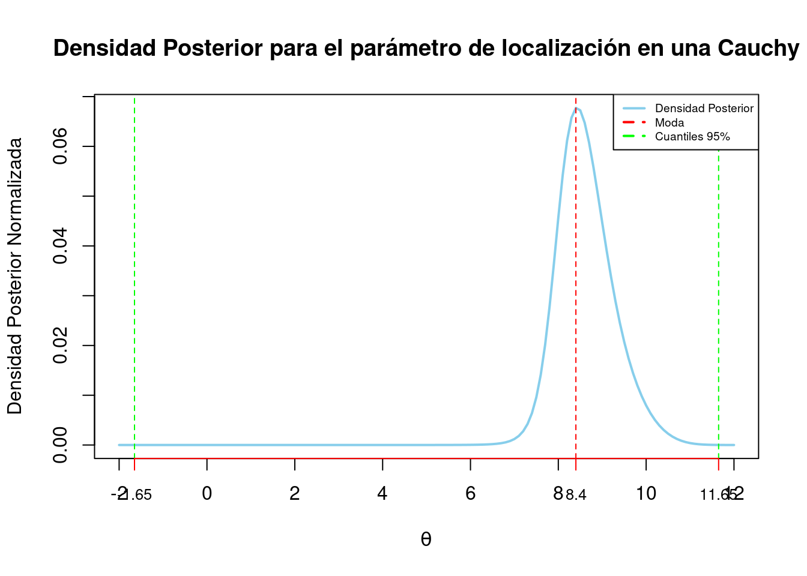

<!DOCTYPE html>
<html xmlns="http://www.w3.org/1999/xhtml" lang="en" xml:lang="en"><head>

<meta charset="utf-8">
<meta name="generator" content="quarto-1.3.450">

<meta name="viewport" content="width=device-width, initial-scale=1.0, user-scalable=yes">

<meta name="author" content="Sara">
<meta name="dcterms.date" content="2024-02-06">

<title>Tarea 2</title>
<style>
code{white-space: pre-wrap;}
span.smallcaps{font-variant: small-caps;}
div.columns{display: flex; gap: min(4vw, 1.5em);}
div.column{flex: auto; overflow-x: auto;}
div.hanging-indent{margin-left: 1.5em; text-indent: -1.5em;}
ul.task-list{list-style: none;}
ul.task-list li input[type="checkbox"] {
  width: 0.8em;
  margin: 0 0.8em 0.2em -1em; /* quarto-specific, see https://github.com/quarto-dev/quarto-cli/issues/4556 */ 
  vertical-align: middle;
}
/* CSS for syntax highlighting */
pre > code.sourceCode { white-space: pre; position: relative; }
pre > code.sourceCode > span { display: inline-block; line-height: 1.25; }
pre > code.sourceCode > span:empty { height: 1.2em; }
.sourceCode { overflow: visible; }
code.sourceCode > span { color: inherit; text-decoration: inherit; }
div.sourceCode { margin: 1em 0; }
pre.sourceCode { margin: 0; }
@media screen {
div.sourceCode { overflow: auto; }
}
@media print {
pre > code.sourceCode { white-space: pre-wrap; }
pre > code.sourceCode > span { text-indent: -5em; padding-left: 5em; }
}
pre.numberSource code
  { counter-reset: source-line 0; }
pre.numberSource code > span
  { position: relative; left: -4em; counter-increment: source-line; }
pre.numberSource code > span > a:first-child::before
  { content: counter(source-line);
    position: relative; left: -1em; text-align: right; vertical-align: baseline;
    border: none; display: inline-block;
    -webkit-touch-callout: none; -webkit-user-select: none;
    -khtml-user-select: none; -moz-user-select: none;
    -ms-user-select: none; user-select: none;
    padding: 0 4px; width: 4em;
  }
pre.numberSource { margin-left: 3em;  padding-left: 4px; }
div.sourceCode
  {   }
@media screen {
pre > code.sourceCode > span > a:first-child::before { text-decoration: underline; }
}
</style>


<script src="tarea2_files/libs/clipboard/clipboard.min.js"></script>
<script src="tarea2_files/libs/quarto-html/quarto.js"></script>
<script src="tarea2_files/libs/quarto-html/popper.min.js"></script>
<script src="tarea2_files/libs/quarto-html/tippy.umd.min.js"></script>
<script src="tarea2_files/libs/quarto-html/anchor.min.js"></script>
<link href="tarea2_files/libs/quarto-html/tippy.css" rel="stylesheet">
<link href="tarea2_files/libs/quarto-html/quarto-syntax-highlighting.css" rel="stylesheet" id="quarto-text-highlighting-styles">
<script src="tarea2_files/libs/bootstrap/bootstrap.min.js"></script>
<link href="tarea2_files/libs/bootstrap/bootstrap-icons.css" rel="stylesheet">
<link href="tarea2_files/libs/bootstrap/bootstrap.min.css" rel="stylesheet" id="quarto-bootstrap" data-mode="light">

  <script src="https://polyfill.io/v3/polyfill.min.js?features=es6"></script>
  <script src="https://cdn.jsdelivr.net/npm/mathjax@3/es5/tex-chtml-full.js" type="text/javascript"></script>

</head>

<body class="fullcontent">

<div id="quarto-content" class="page-columns page-rows-contents page-layout-article">

<main class="content" id="quarto-document-content">

<header id="title-block-header" class="quarto-title-block default">
<div class="quarto-title">
<h1 class="title">Tarea 2</h1>
</div>


<div class="quarto-title-meta">

    <div>
    <div class="quarto-title-meta-heading">Author</div>
    <div class="quarto-title-meta-contents">
             <p>Sara </p>
          </div>
  </div>
    
    <div>
    <div class="quarto-title-meta-heading">Published</div>
    <div class="quarto-title-meta-contents">
      <p class="date">February 6, 2024</p>
    </div>
  </div>
  
    
  </div>
  

</header>

<div class="cell">
<div class="sourceCode cell-code" id="cb1"><pre class="sourceCode r code-with-copy"><code class="sourceCode r"><span id="cb1-1"><a href="#cb1-1" aria-hidden="true" tabindex="-1"></a><span class="fu">library</span>(ggplot2)</span>
<span id="cb1-2"><a href="#cb1-2" aria-hidden="true" tabindex="-1"></a><span class="fu">library</span>(tidyverse)</span></code><button title="Copy to Clipboard" class="code-copy-button"><i class="bi"></i></button></pre></div>
<div class="cell-output cell-output-stderr">
<pre><code>── Attaching core tidyverse packages ──────────────────────── tidyverse 2.0.0 ──
✔ dplyr     1.1.4     ✔ readr     2.1.5
✔ forcats   1.0.0     ✔ stringr   1.5.1
✔ lubridate 1.9.3     ✔ tibble    3.2.1
✔ purrr     1.0.2     ✔ tidyr     1.3.0
── Conflicts ────────────────────────────────────────── tidyverse_conflicts() ──
✖ dplyr::filter() masks stats::filter()
✖ dplyr::lag()    masks stats::lag()
ℹ Use the conflicted package (&lt;http://conflicted.r-lib.org/&gt;) to force all conflicts to become errors</code></pre>
</div>
<div class="sourceCode cell-code" id="cb3"><pre class="sourceCode r code-with-copy"><code class="sourceCode r"><span id="cb3-1"><a href="#cb3-1" aria-hidden="true" tabindex="-1"></a><span class="fu">library</span>(patchwork)</span></code><button title="Copy to Clipboard" class="code-copy-button"><i class="bi"></i></button></pre></div>
</div>
<section id="modelo-poisson" class="level1">
<h1>Modelo poisson</h1>
<ol type="1">
<li>Estimando una media Poisson usando una inicial discreta. Supongan que son dueños de una compañía de transporte con una flota grande de camiones. Las descomposturas ocurren aleatoriamente en el tiempo y supóngase que el número de descomposturas durante un intervalo de <span class="math inline">\(t\)</span> días sigue un distribución Poisson con media <span class="math inline">\(λt\)</span>. El parámetro <span class="math inline">\(λ\)</span> es la tasa de descompostura diaria. Los posibles valores para <span class="math inline">\(λ\)</span> son <span class="math inline">\(0.5\)</span>, <span class="math inline">\(1\)</span>, <span class="math inline">\(1.5\)</span>, <span class="math inline">\(2\)</span>, <span class="math inline">\(2.5\)</span> y <span class="math inline">\(3\)</span>, con respectivas probabilidades <span class="math inline">\(0.1\)</span>, <span class="math inline">\(0.2\)</span>, <span class="math inline">\(0.3\)</span>, <span class="math inline">\(0.2\)</span>, <span class="math inline">\(0.15\)</span> y <span class="math inline">\(0.05\)</span>. Si uno observa <span class="math inline">\(y\)</span> descomposturas, entonces la probabilidad posterior de <span class="math inline">\(λ\)</span> es proporcional a</li>
</ol>
<p><span class="math display">\[g(λ) exp(−tλ)(tλ)y,\]</span> donde <span class="math inline">\(g\)</span> es la distribución inicial.</p>
<ol type="a">
<li>Si <span class="math inline">\(12\)</span> camiones se descomponen en un periodo de <span class="math inline">\(6\)</span> días, encontrar la probabilidad posterior para las diferentes tasas.</li>
</ol>
<section id="datos-proporcionados" class="level2">
<h2 class="anchored" data-anchor-id="datos-proporcionados">Datos proporcionados</h2>
<div class="cell">
<div class="sourceCode cell-code" id="cb4"><pre class="sourceCode r code-with-copy"><code class="sourceCode r"><span id="cb4-1"><a href="#cb4-1" aria-hidden="true" tabindex="-1"></a>lambda_values <span class="ot">&lt;-</span> <span class="fu">c</span>(<span class="fl">0.5</span>, <span class="dv">1</span>, <span class="fl">1.5</span>, <span class="dv">2</span>, <span class="fl">2.5</span>, <span class="dv">3</span>)</span>
<span id="cb4-2"><a href="#cb4-2" aria-hidden="true" tabindex="-1"></a>probabilidades_iniciales <span class="ot">&lt;-</span> <span class="fu">c</span>(<span class="fl">0.1</span>, <span class="fl">0.2</span>, <span class="fl">0.3</span>, <span class="fl">0.2</span>, <span class="fl">0.15</span>, <span class="fl">0.05</span>)</span>
<span id="cb4-3"><a href="#cb4-3" aria-hidden="true" tabindex="-1"></a>t <span class="ot">&lt;-</span> <span class="dv">6</span>  <span class="co"># días</span></span>
<span id="cb4-4"><a href="#cb4-4" aria-hidden="true" tabindex="-1"></a>y <span class="ot">&lt;-</span> <span class="dv">12</span>  <span class="co"># descomposturas observadas</span></span></code><button title="Copy to Clipboard" class="code-copy-button"><i class="bi"></i></button></pre></div>
</div>
</section>
<section id="probabilidades-iniciales" class="level2">
<h2 class="anchored" data-anchor-id="probabilidades-iniciales">Probabilidades iniciales</h2>
<div class="cell">
<div class="sourceCode cell-code" id="cb5"><pre class="sourceCode r code-with-copy"><code class="sourceCode r"><span id="cb5-1"><a href="#cb5-1" aria-hidden="true" tabindex="-1"></a>iniciales <span class="ot">&lt;-</span> <span class="fu">data.frame</span>(<span class="at">lambda =</span> lambda_values, <span class="at">prob_inicial =</span> probabilidades_iniciales)</span>
<span id="cb5-2"><a href="#cb5-2" aria-hidden="true" tabindex="-1"></a></span>
<span id="cb5-3"><a href="#cb5-3" aria-hidden="true" tabindex="-1"></a><span class="co"># Creamos un gráfico de barras para visualizar las probabilidades iniciales</span></span>
<span id="cb5-4"><a href="#cb5-4" aria-hidden="true" tabindex="-1"></a><span class="fu">ggplot</span>(iniciales, <span class="fu">aes</span>(<span class="at">x =</span> <span class="fu">as.factor</span>(lambda), <span class="at">y =</span> prob_inicial,<span class="at">label =</span> scales<span class="sc">::</span><span class="fu">percent</span>(prob_inicial))) <span class="sc">+</span></span>
<span id="cb5-5"><a href="#cb5-5" aria-hidden="true" tabindex="-1"></a>  <span class="fu">geom_bar</span>(<span class="at">stat =</span> <span class="st">"identity"</span>, <span class="at">fill =</span> <span class="st">"lightcoral"</span>, <span class="at">color =</span> <span class="st">"black"</span>) <span class="sc">+</span></span>
<span id="cb5-6"><a href="#cb5-6" aria-hidden="true" tabindex="-1"></a>  <span class="fu">geom_text</span>(<span class="at">position =</span> <span class="fu">position_stack</span>(<span class="at">vjust =</span> <span class="fl">0.5</span>), <span class="at">size =</span> <span class="dv">3</span>) <span class="sc">+</span></span>
<span id="cb5-7"><a href="#cb5-7" aria-hidden="true" tabindex="-1"></a>  <span class="fu">labs</span>(<span class="at">title =</span> <span class="st">"Probabilidades Iniciales"</span>,</span>
<span id="cb5-8"><a href="#cb5-8" aria-hidden="true" tabindex="-1"></a>       <span class="at">x =</span> <span class="st">"Tasa de Descompostura (lambda)"</span>,</span>
<span id="cb5-9"><a href="#cb5-9" aria-hidden="true" tabindex="-1"></a>       <span class="at">y =</span> <span class="st">"Probabilidad Inicial"</span>) <span class="sc">+</span></span>
<span id="cb5-10"><a href="#cb5-10" aria-hidden="true" tabindex="-1"></a>  <span class="fu">theme_minimal</span>()</span></code><button title="Copy to Clipboard" class="code-copy-button"><i class="bi"></i></button></pre></div>
<div class="cell-output-display">
<p></p>
</div>
</div>
</section>
<section id="cálculo-de-probabilidades-posteriores" class="level2">
<h2 class="anchored" data-anchor-id="cálculo-de-probabilidades-posteriores">Cálculo de probabilidades posteriores</h2>
<div class="cell">
<div class="sourceCode cell-code" id="cb6"><pre class="sourceCode r code-with-copy"><code class="sourceCode r"><span id="cb6-1"><a href="#cb6-1" aria-hidden="true" tabindex="-1"></a><span class="co"># Calculamos las probabilidades posteriores proporcionales</span></span>
<span id="cb6-2"><a href="#cb6-2" aria-hidden="true" tabindex="-1"></a>prob_posterior_proporcional <span class="ot">&lt;-</span> probabilidades_iniciales <span class="sc">*</span> <span class="fu">exp</span>(<span class="sc">-</span>t <span class="sc">*</span> lambda_values) <span class="sc">*</span> (t <span class="sc">*</span> lambda_values) <span class="sc">^</span> y</span>
<span id="cb6-3"><a href="#cb6-3" aria-hidden="true" tabindex="-1"></a></span>
<span id="cb6-4"><a href="#cb6-4" aria-hidden="true" tabindex="-1"></a><span class="co"># Normalizamos las probabilidades</span></span>
<span id="cb6-5"><a href="#cb6-5" aria-hidden="true" tabindex="-1"></a>prob_posterior_normalizadas <span class="ot">&lt;-</span> prob_posterior_proporcional <span class="sc">/</span> <span class="fu">sum</span>(prob_posterior_proporcional)</span>
<span id="cb6-6"><a href="#cb6-6" aria-hidden="true" tabindex="-1"></a></span>
<span id="cb6-7"><a href="#cb6-7" aria-hidden="true" tabindex="-1"></a><span class="co"># Creamos un data frame con los resultados</span></span>
<span id="cb6-8"><a href="#cb6-8" aria-hidden="true" tabindex="-1"></a>resultados <span class="ot">&lt;-</span> <span class="fu">data.frame</span>(<span class="at">lambda =</span> lambda_values, <span class="at">prob_posterior =</span> prob_posterior_normalizadas)</span>
<span id="cb6-9"><a href="#cb6-9" aria-hidden="true" tabindex="-1"></a></span>
<span id="cb6-10"><a href="#cb6-10" aria-hidden="true" tabindex="-1"></a><span class="co"># Crea un gráfico de barras para visualizar las probabilidades normalizadas</span></span>
<span id="cb6-11"><a href="#cb6-11" aria-hidden="true" tabindex="-1"></a><span class="fu">ggplot</span>(resultados, <span class="fu">aes</span>(<span class="at">x =</span> <span class="fu">as.factor</span>(lambda), <span class="at">y =</span> prob_posterior,<span class="at">label =</span> scales<span class="sc">::</span><span class="fu">percent</span>(prob_posterior_normalizadas))) <span class="sc">+</span></span>
<span id="cb6-12"><a href="#cb6-12" aria-hidden="true" tabindex="-1"></a>  <span class="fu">geom_bar</span>(<span class="at">stat =</span> <span class="st">"identity"</span>, <span class="at">fill =</span> <span class="st">"skyblue"</span>, <span class="at">color =</span> <span class="st">"black"</span>) <span class="sc">+</span></span>
<span id="cb6-13"><a href="#cb6-13" aria-hidden="true" tabindex="-1"></a>  <span class="fu">geom_text</span>(<span class="at">position =</span> <span class="fu">position_stack</span>(<span class="at">vjust =</span> <span class="fl">0.5</span>), <span class="at">size =</span> <span class="dv">3</span>) <span class="sc">+</span></span>
<span id="cb6-14"><a href="#cb6-14" aria-hidden="true" tabindex="-1"></a>  <span class="fu">labs</span>(<span class="at">title =</span> <span class="st">"Probabilidades Posteriores Normalizadas"</span>,</span>
<span id="cb6-15"><a href="#cb6-15" aria-hidden="true" tabindex="-1"></a>       <span class="at">x =</span> <span class="st">"Tasa de Descompostura (lambda)"</span>,</span>
<span id="cb6-16"><a href="#cb6-16" aria-hidden="true" tabindex="-1"></a>       <span class="at">y =</span> <span class="st">"Probabilidad Normalizada"</span>) <span class="sc">+</span></span>
<span id="cb6-17"><a href="#cb6-17" aria-hidden="true" tabindex="-1"></a>  <span class="fu">theme_minimal</span>()</span></code><button title="Copy to Clipboard" class="code-copy-button"><i class="bi"></i></button></pre></div>
<div class="cell-output-display">
<p></p>
</div>
</div>
</section>
<section id="comparativo-de-probabilidades-iniciales-y-posteriores" class="level2">
<h2 class="anchored" data-anchor-id="comparativo-de-probabilidades-iniciales-y-posteriores">Comparativo de probabilidades iniciales y posteriores</h2>
<div class="cell">
<div class="sourceCode cell-code" id="cb7"><pre class="sourceCode r code-with-copy"><code class="sourceCode r"><span id="cb7-1"><a href="#cb7-1" aria-hidden="true" tabindex="-1"></a><span class="co"># Creamos data frames con los resultados iniciales y posteriores</span></span>
<span id="cb7-2"><a href="#cb7-2" aria-hidden="true" tabindex="-1"></a>iniciales <span class="ot">&lt;-</span> <span class="fu">data.frame</span>(<span class="at">lambda =</span> lambda_values, <span class="at">prob =</span> probabilidades_iniciales, <span class="at">tipo =</span> <span class="st">"Inicial"</span>)</span>
<span id="cb7-3"><a href="#cb7-3" aria-hidden="true" tabindex="-1"></a>posteriores <span class="ot">&lt;-</span> <span class="fu">data.frame</span>(<span class="at">lambda =</span> lambda_values, <span class="at">prob =</span> prob_posterior_normalizadas, <span class="at">tipo =</span> <span class="st">"Posterior"</span>)</span>
<span id="cb7-4"><a href="#cb7-4" aria-hidden="true" tabindex="-1"></a></span>
<span id="cb7-5"><a href="#cb7-5" aria-hidden="true" tabindex="-1"></a></span>
<span id="cb7-6"><a href="#cb7-6" aria-hidden="true" tabindex="-1"></a><span class="co"># Combina los data frames para la visualización comparativa</span></span>
<span id="cb7-7"><a href="#cb7-7" aria-hidden="true" tabindex="-1"></a>resultados_combinados <span class="ot">&lt;-</span> <span class="fu">rbind</span>(iniciales, posteriores)</span>
<span id="cb7-8"><a href="#cb7-8" aria-hidden="true" tabindex="-1"></a></span>
<span id="cb7-9"><a href="#cb7-9" aria-hidden="true" tabindex="-1"></a></span>
<span id="cb7-10"><a href="#cb7-10" aria-hidden="true" tabindex="-1"></a><span class="fu">ggplot</span>(resultados_combinados, <span class="fu">aes</span>(<span class="at">x =</span> <span class="fu">as.factor</span>(lambda), <span class="at">y =</span> prob, <span class="at">fill =</span> tipo, <span class="at">label =</span> scales<span class="sc">::</span><span class="fu">percent</span>(prob))) <span class="sc">+</span></span>
<span id="cb7-11"><a href="#cb7-11" aria-hidden="true" tabindex="-1"></a>  <span class="fu">geom_bar</span>(<span class="at">stat =</span> <span class="st">"identity"</span>, <span class="at">position =</span> <span class="st">"dodge"</span>, <span class="at">color =</span> <span class="st">"black"</span>, <span class="at">width =</span> <span class="fl">0.7</span>) <span class="sc">+</span></span>
<span id="cb7-12"><a href="#cb7-12" aria-hidden="true" tabindex="-1"></a>  <span class="fu">geom_text</span>(<span class="at">position =</span> <span class="fu">position_dodge</span>(<span class="at">width =</span> <span class="fl">0.7</span>), <span class="at">vjust =</span> <span class="sc">-</span><span class="fl">0.5</span>, <span class="at">size =</span> <span class="dv">3</span>) <span class="sc">+</span></span>
<span id="cb7-13"><a href="#cb7-13" aria-hidden="true" tabindex="-1"></a>  <span class="fu">labs</span>(<span class="at">title =</span> <span class="st">"Comparación entre Probabilidades Iniciales y Posteriores"</span>,</span>
<span id="cb7-14"><a href="#cb7-14" aria-hidden="true" tabindex="-1"></a>       <span class="at">x =</span> <span class="st">"Tasa de Descompostura (lambda)"</span>,</span>
<span id="cb7-15"><a href="#cb7-15" aria-hidden="true" tabindex="-1"></a>       <span class="at">y =</span> <span class="st">"Probabilidad"</span>) <span class="sc">+</span></span>
<span id="cb7-16"><a href="#cb7-16" aria-hidden="true" tabindex="-1"></a>  <span class="fu">scale_fill_manual</span>(<span class="at">values =</span> <span class="fu">c</span>(<span class="st">"lightcoral"</span>, <span class="st">"skyblue"</span>)) <span class="sc">+</span></span>
<span id="cb7-17"><a href="#cb7-17" aria-hidden="true" tabindex="-1"></a>  <span class="fu">theme_minimal</span>()</span></code><button title="Copy to Clipboard" class="code-copy-button"><i class="bi"></i></button></pre></div>
<div class="cell-output-display">
<p></p>
</div>
</div>
<ol start="2" type="a">
<li>Encontrar la probabilidad de que no haya descomposturas durante la siguiente semana.</li>
</ol>
<p>Hint: Si la tasa es <span class="math inline">\(λ\)</span>, la probabilidad condicional de no descomposturas durante un periodo de <span class="math inline">\(7\)</span> días está dado por <span class="math inline">\(\exp(−7λ)\)</span>. Se puede calcular esta probabilidad predictiva multiplicando la lista de probabilidades condicionales por las probabilidades posteriores de <span class="math inline">\(λ\)</span> y encontrando la suma de los productos</p>
</section>
<section id="cálculo-de-probabilidad-mediante-la-función-de-masa-de-probabilidad-de-la-distribución-poisson." class="level2">
<h2 class="anchored" data-anchor-id="cálculo-de-probabilidad-mediante-la-función-de-masa-de-probabilidad-de-la-distribución-poisson.">Cálculo de probabilidad mediante la función de masa de probabilidad de la distribución poisson.</h2>
<p>La probabilidad de que no haya descomposturas <span class="math inline">\((P(X=0))\)</span> en un periodo de tiempo dado se puede calcular usando la función de masa de probabilidad de la distribución Poisson:</p>
<p><span class="math inline">\(P(X=0)=\frac{!e^{−λ}⋅λ}{0}​\)</span></p>
<p>Donde <span class="math inline">\(X\)</span> es la variable aleatoria que representa el número de descomposturas, <span class="math inline">\(λ\)</span> es la tasa de descompostura diaria y <span class="math inline">\(e\)</span> es la base del logaritmo natural.</p>
<p>La probabilidad de no tener descomposturas en una semana (7 días) sería la probabilidad de no tener descomposturas en un día <span class="math inline">\(P(X=0))\)</span> elevada a la potencia de 7 (días):</p>
<p><span class="math inline">\(P(No\_descomposturas\_en\_\_7\_días)=[P(X=0)]^7\)</span></p>
<div class="cell">
<div class="sourceCode cell-code" id="cb8"><pre class="sourceCode r code-with-copy"><code class="sourceCode r"><span id="cb8-1"><a href="#cb8-1" aria-hidden="true" tabindex="-1"></a><span class="co"># Probabilidad predictiva condicional de no tener descomposturas en 7 días</span></span>
<span id="cb8-2"><a href="#cb8-2" aria-hidden="true" tabindex="-1"></a>prob_predictiva_condicional_7_dias <span class="ot">&lt;-</span> <span class="fu">exp</span>(<span class="sc">-</span><span class="dv">7</span> <span class="sc">*</span> lambda_values)</span>
<span id="cb8-3"><a href="#cb8-3" aria-hidden="true" tabindex="-1"></a></span>
<span id="cb8-4"><a href="#cb8-4" aria-hidden="true" tabindex="-1"></a><span class="co"># Probabilidad ponderada por las probabilidades posteriores</span></span>
<span id="cb8-5"><a href="#cb8-5" aria-hidden="true" tabindex="-1"></a>prob_no_descomposturas_7_dias_ponderada <span class="ot">&lt;-</span> <span class="fu">sum</span>(prob_predictiva_condicional_7_dias <span class="sc">*</span> prob_posterior_normalizadas)</span>
<span id="cb8-6"><a href="#cb8-6" aria-hidden="true" tabindex="-1"></a></span>
<span id="cb8-7"><a href="#cb8-7" aria-hidden="true" tabindex="-1"></a><span class="fu">cat</span>(<span class="st">"Probabilidad de no tener descomposturas en 7 días:"</span>, prob_no_descomposturas_7_dias_ponderada, <span class="st">"</span><span class="sc">\n</span><span class="st">"</span>)</span></code><button title="Copy to Clipboard" class="code-copy-button"><i class="bi"></i></button></pre></div>
<div class="cell-output cell-output-stdout">
<pre><code>Probabilidad de no tener descomposturas en 7 días: 4.640932e-05 </code></pre>
</div>
</div>
<p>Probabilidad de no tener descomposturas en 7 días: 4.640932e-05</p>
<ol start="2" type="1">
<li><strong>Estimando una proporción y predicción de una muestra futura.</strong> Un estudio reporta sobre los efectos de largo plazo de exposición a bajas dosis de plomo en niños. Los investigadores analizaron el contenido de plomo en la caída de los dientes de leche. De los niños cuyos dientes tienen un contenido de plomo mayor que 22.22 ppm, 22 eventualmente se graduaron de la preparatoria y 7 no. Supongan que su densidad inicial para p, la proporción de todos tales niños que se graduaron de preparatoria es <span class="math inline">\(beta(1, 1)\)</span>, y posterior es <span class="math inline">\(beta(23, 8)\)</span>.</li>
</ol>
<ol type="a">
<li>Encontrar un intervalo estimado de 90 % para <span class="math inline">\(p\)</span>.</li>
</ol>
<p>Dado que la distribución posterior es <span class="math inline">\(beta(23, 8)\)</span>, podemos utilizar cuantiles de esta distribución para obtener el intervalo de credibilidad.</p>
<p>El intervalo de credibilidad del 90% para <span class="math inline">\(p\)</span> se obtiene utilizando los cuantiles de la distribución <span class="math inline">\(beta(23,8)\)</span>.</p>
<div class="cell">
<div class="sourceCode cell-code" id="cb10"><pre class="sourceCode r code-with-copy"><code class="sourceCode r"><span id="cb10-1"><a href="#cb10-1" aria-hidden="true" tabindex="-1"></a><span class="co"># Parámetros de la distribución posterior</span></span>
<span id="cb10-2"><a href="#cb10-2" aria-hidden="true" tabindex="-1"></a>alpha_posterior <span class="ot">&lt;-</span> <span class="dv">23</span></span>
<span id="cb10-3"><a href="#cb10-3" aria-hidden="true" tabindex="-1"></a>beta_posterior <span class="ot">&lt;-</span> <span class="dv">8</span></span>
<span id="cb10-4"><a href="#cb10-4" aria-hidden="true" tabindex="-1"></a></span>
<span id="cb10-5"><a href="#cb10-5" aria-hidden="true" tabindex="-1"></a><span class="co"># Intervalo de credibilidad del 90% para p</span></span>
<span id="cb10-6"><a href="#cb10-6" aria-hidden="true" tabindex="-1"></a>intervalo_credibilidad <span class="ot">&lt;-</span> <span class="fu">qbeta</span>(<span class="fu">c</span>(<span class="fl">0.05</span>, <span class="fl">0.95</span>), alpha_posterior, beta_posterior)</span>
<span id="cb10-7"><a href="#cb10-7" aria-hidden="true" tabindex="-1"></a></span>
<span id="cb10-8"><a href="#cb10-8" aria-hidden="true" tabindex="-1"></a><span class="fu">cat</span>(<span class="st">"Intervalo de 90% para p:"</span>, intervalo_credibilidad, <span class="st">"</span><span class="sc">\n</span><span class="st">"</span>)</span></code><button title="Copy to Clipboard" class="code-copy-button"><i class="bi"></i></button></pre></div>
<div class="cell-output cell-output-stdout">
<pre><code>Intervalo de 90% para p: 0.6060526 0.8598149 </code></pre>
</div>
</div>
<ol start="2" type="a">
<li>Probabilidad de que p exceda 0.6 Para encontrar la probabilidad de que p exceda 0.6,utilizamos la función de densidad de probabilidad acumulativa (CDF) de la distribución <span class="math inline">\(beta(23,8)\)</span>.</li>
</ol>
<div class="cell">
<div class="sourceCode cell-code" id="cb12"><pre class="sourceCode r code-with-copy"><code class="sourceCode r"><span id="cb12-1"><a href="#cb12-1" aria-hidden="true" tabindex="-1"></a><span class="co"># Probabilidad de que p exceda 0.6</span></span>
<span id="cb12-2"><a href="#cb12-2" aria-hidden="true" tabindex="-1"></a>prob_exceder_0<span class="fl">.6</span> <span class="ot">&lt;-</span> <span class="dv">1</span> <span class="sc">-</span> <span class="fu">pbeta</span>(<span class="fl">0.6</span>, alpha_posterior, beta_posterior)</span>
<span id="cb12-3"><a href="#cb12-3" aria-hidden="true" tabindex="-1"></a></span>
<span id="cb12-4"><a href="#cb12-4" aria-hidden="true" tabindex="-1"></a><span class="fu">cat</span>(<span class="st">"Probabilidad de que p exceda 0.6:"</span>, prob_exceder_0<span class="fl">.6</span>, <span class="st">"</span><span class="sc">\n</span><span class="st">"</span>)</span></code><button title="Copy to Clipboard" class="code-copy-button"><i class="bi"></i></button></pre></div>
<div class="cell-output cell-output-stdout">
<pre><code>Probabilidad de que p exceda 0.6: 0.9564759 </code></pre>
</div>
</div>
<ol start="3" type="1">
<li><strong>Estimando una media normal posterior con una inicial discreta.</strong> Supongamos que están interesados en estimar el promedio de caida de lluvia por año <span class="math inline">\(μ\)</span> en (cm) para una ciudad grande del Centro de México. Supongan que la caída anual individual <span class="math inline">\(y1, . . . , yn\)</span> son obtenidas de una población que se supone <span class="math inline">\(N(μ, 100)\)</span>. Antes de recolectar los datos, supongan que creen que la lluvia media puede estar en los siguiente valores con respectivas probabilidades | μ | 20 | 30 | 40 | 50 | 60 | 70 | | g(μ) | 0.1 | 0.15 | 0.25 | 0.25 | 0.15 | 0.1 |</li>
</ol>
<ol type="a">
<li>Supongan que se observan los totales de caída de lluvia 38.6, 42.4, 57.5, 40.5, 51.7, 67.1, 33.4, 60.9, 64.1, 40.1, 40.7 y 6.4. Calcular la media.</li>
</ol>
<div class="cell">
<div class="sourceCode cell-code" id="cb14"><pre class="sourceCode r code-with-copy"><code class="sourceCode r"><span id="cb14-1"><a href="#cb14-1" aria-hidden="true" tabindex="-1"></a><span class="co"># Datos de caída de lluvia</span></span>
<span id="cb14-2"><a href="#cb14-2" aria-hidden="true" tabindex="-1"></a>datos_lluvia <span class="ot">&lt;-</span> <span class="fu">c</span>(<span class="fl">38.6</span>, <span class="fl">42.4</span>, <span class="fl">57.5</span>, <span class="fl">40.5</span>, <span class="fl">51.7</span>, <span class="fl">67.1</span>, <span class="fl">33.4</span>, <span class="fl">60.9</span>, <span class="fl">64.1</span>, <span class="fl">40.1</span>, <span class="fl">40.7</span>, <span class="fl">6.4</span>)</span>
<span id="cb14-3"><a href="#cb14-3" aria-hidden="true" tabindex="-1"></a></span>
<span id="cb14-4"><a href="#cb14-4" aria-hidden="true" tabindex="-1"></a><span class="co"># Calcular la media muestral</span></span>
<span id="cb14-5"><a href="#cb14-5" aria-hidden="true" tabindex="-1"></a>media_lluvia <span class="ot">&lt;-</span> <span class="fu">mean</span>(datos_lluvia)</span>
<span id="cb14-6"><a href="#cb14-6" aria-hidden="true" tabindex="-1"></a></span>
<span id="cb14-7"><a href="#cb14-7" aria-hidden="true" tabindex="-1"></a><span class="co"># Imprimir el resultado</span></span>
<span id="cb14-8"><a href="#cb14-8" aria-hidden="true" tabindex="-1"></a><span class="fu">cat</span>(<span class="st">"La media de la caída de lluvia es:"</span>, media_lluvia, <span class="st">"centímetros</span><span class="sc">\n</span><span class="st">"</span>)</span></code><button title="Copy to Clipboard" class="code-copy-button"><i class="bi"></i></button></pre></div>
<div class="cell-output cell-output-stdout">
<pre><code>La media de la caída de lluvia es: 45.28333 centímetros</code></pre>
</div>
</div>
<ol start="2" type="a">
<li>Calcular la función de verosimilitud utilizando como estadística suficiente la media <span class="math inline">\(\bar{y}\)</span>.</li>
</ol>
<p>La función de verosimilitud es una medida de la probabilidad de observar los datos dados ciertos valores de los parámetros. En este caso, la función de verosimilitud se refiere a la probabilidad de observar los totales de caída de lluvia <span class="math inline">\(y\)</span> dados distintos valores de la media <span class="math inline">\(\mu\)</span>, asumiendo una distribución normal con varianza conocida ((^2 = 100)).</p>
<p>La función de verosimilitud (L(|)) se puede expresar para una muestra de (n) observaciones como el producto de las densidades de probabilidad de cada observación:</p>
<p>[ L(|) = _{i=1}^{n} f(y_i|) ]</p>
<p>Dado que estamos asumiendo una distribución normal, la función de densidad de probabilidad para una observación individual (y_i) es:</p>
<p>[ f(y_i|) = e^{-} ]</p>
<p>Sustituimos esta expresión en la función de verosimilitud:</p>
<p>[ L(|) = _{i=1}^{n} e^{-} ]</p>
<p>Dado que la varianza es conocida ((^2 = 100)), podemos simplificar aún más:</p>
<p>[ L(|) = _{i=1}^{n} e^{-} ]</p>
<div class="cell">
<div class="sourceCode cell-code" id="cb16"><pre class="sourceCode r code-with-copy"><code class="sourceCode r"><span id="cb16-1"><a href="#cb16-1" aria-hidden="true" tabindex="-1"></a><span class="co"># Parámetro de la distribución (media poblacional)</span></span>
<span id="cb16-2"><a href="#cb16-2" aria-hidden="true" tabindex="-1"></a>mu <span class="ot">&lt;-</span> <span class="fu">seq</span>(<span class="dv">20</span>, <span class="dv">70</span>, <span class="at">by =</span> <span class="dv">1</span>)  <span class="co"># Valores posibles de la media</span></span>
<span id="cb16-3"><a href="#cb16-3" aria-hidden="true" tabindex="-1"></a></span>
<span id="cb16-4"><a href="#cb16-4" aria-hidden="true" tabindex="-1"></a><span class="co"># Función de verosimilitud</span></span>
<span id="cb16-5"><a href="#cb16-5" aria-hidden="true" tabindex="-1"></a>verosimilitud <span class="ot">&lt;-</span> <span class="fu">prod</span>(<span class="fu">dnorm</span>(datos_lluvia, <span class="at">mean =</span> mu, <span class="at">sd =</span> <span class="fu">sqrt</span>(<span class="dv">100</span>)))</span>
<span id="cb16-6"><a href="#cb16-6" aria-hidden="true" tabindex="-1"></a></span>
<span id="cb16-7"><a href="#cb16-7" aria-hidden="true" tabindex="-1"></a><span class="co"># Imprimir el resultado</span></span>
<span id="cb16-8"><a href="#cb16-8" aria-hidden="true" tabindex="-1"></a><span class="fu">cat</span>(<span class="st">"La función de verosimilitud para y barra es:"</span>, verosimilitud, <span class="st">"</span><span class="sc">\n</span><span class="st">"</span>)</span></code><button title="Copy to Clipboard" class="code-copy-button"><i class="bi"></i></button></pre></div>
<div class="cell-output cell-output-stdout">
<pre><code>La función de verosimilitud para y barra es: 7.042525e-126 </code></pre>
</div>
</div>
<p>*Calcular las probabilidades posteriores para <span class="math inline">\(μ\)</span>.</p>
<p>Para calcular las probabilidades posteriores para () utilizando el enfoque bayesiano, necesitamos combinar la información de la función de verosimilitud y la distribución prior. Las probabilidades posteriores se obtienen aplicando el Teorema de Bayes.</p>
<p>La forma general de la distribución posterior (f(|)) es proporcional al producto de la función de verosimilitud y la distribución prior:</p>
<p>[ f(|) g() f(|) ]</p>
<p>Donde: - ( g() ) es la distribución prior discreta para () con probabilidades (0.1, 0.15, 0.25, 0.25, 0.15, 0.1), y - ( f(|) ) es la función de verosimilitud calculada a partir de los datos de caída de lluvia observados.</p>
<p>En este caso, podemos calcular las probabilidades posteriores para () para cada uno de los valores posibles utilizando las probabilidades de la prior y la función de verosimilitud.</p>
<p>Las probabilidades están normalizadas para sumar 1.</p>
<div class="cell">
<div class="sourceCode cell-code" id="cb18"><pre class="sourceCode r code-with-copy"><code class="sourceCode r"><span id="cb18-1"><a href="#cb18-1" aria-hidden="true" tabindex="-1"></a><span class="co"># Parámetros prior</span></span>
<span id="cb18-2"><a href="#cb18-2" aria-hidden="true" tabindex="-1"></a>data <span class="ot">&lt;-</span> <span class="fu">data.frame</span>(<span class="at">mu=</span><span class="fu">c</span>(<span class="dv">20</span>, <span class="dv">30</span>, <span class="dv">40</span>, <span class="dv">50</span>, <span class="dv">60</span>, <span class="dv">70</span>),</span>
<span id="cb18-3"><a href="#cb18-3" aria-hidden="true" tabindex="-1"></a>                   <span class="at">prob_prior=</span><span class="fu">c</span>(<span class="fl">0.1</span>, <span class="fl">0.15</span>, <span class="fl">0.25</span>, <span class="fl">0.25</span>, <span class="fl">0.15</span>, <span class="fl">0.1</span>))</span>
<span id="cb18-4"><a href="#cb18-4" aria-hidden="true" tabindex="-1"></a></span>
<span id="cb18-5"><a href="#cb18-5" aria-hidden="true" tabindex="-1"></a><span class="co"># Probabilidades posteriores</span></span>
<span id="cb18-6"><a href="#cb18-6" aria-hidden="true" tabindex="-1"></a>data <span class="ot">&lt;-</span> data <span class="sc">%&gt;%</span></span>
<span id="cb18-7"><a href="#cb18-7" aria-hidden="true" tabindex="-1"></a>  <span class="fu">mutate</span>(<span class="at">verosim=</span><span class="fu">exp</span>(<span class="sc">-</span><span class="dv">12</span><span class="sc">*</span>((media_lluvia <span class="sc">-</span> mu)<span class="sc">^</span><span class="dv">2</span>)<span class="sc">/</span>(<span class="dv">2</span><span class="sc">*</span><span class="dv">100</span>)),</span>
<span id="cb18-8"><a href="#cb18-8" aria-hidden="true" tabindex="-1"></a>         <span class="at">dist_post=</span>verosim<span class="sc">*</span>prob_prior,</span>
<span id="cb18-9"><a href="#cb18-9" aria-hidden="true" tabindex="-1"></a>         <span class="at">prob_post=</span>dist_post<span class="sc">/</span><span class="fu">sum</span>(dist_post))</span>
<span id="cb18-10"><a href="#cb18-10" aria-hidden="true" tabindex="-1"></a></span>
<span id="cb18-11"><a href="#cb18-11" aria-hidden="true" tabindex="-1"></a><span class="co">#Resultado</span></span>
<span id="cb18-12"><a href="#cb18-12" aria-hidden="true" tabindex="-1"></a>res <span class="ot">&lt;-</span> data[, <span class="fu">c</span>(<span class="st">"mu"</span>, <span class="st">"prob_post"</span>)]</span>
<span id="cb18-13"><a href="#cb18-13" aria-hidden="true" tabindex="-1"></a>res</span></code><button title="Copy to Clipboard" class="code-copy-button"><i class="bi"></i></button></pre></div>
<div class="cell-output cell-output-stdout">
<pre><code>  mu    prob_post
1 20 1.954479e-17
2 30 1.091063e-06
3 40 4.158078e-01
4 50 5.841881e-01
5 60 3.025731e-06
6 70 1.069871e-16</code></pre>
</div>
</div>
<p>*Encontrar un intervalo de probabilidad de 80% para <span class="math inline">\(μ\)</span>.</p>
<div class="cell">
<div class="sourceCode cell-code" id="cb20"><pre class="sourceCode r code-with-copy"><code class="sourceCode r"><span id="cb20-1"><a href="#cb20-1" aria-hidden="true" tabindex="-1"></a><span class="co"># Probabilidad acumulada</span></span>
<span id="cb20-2"><a href="#cb20-2" aria-hidden="true" tabindex="-1"></a>data <span class="ot">&lt;-</span> data <span class="sc">%&gt;%</span> </span>
<span id="cb20-3"><a href="#cb20-3" aria-hidden="true" tabindex="-1"></a>  <span class="fu">mutate</span>(<span class="at">cum_post=</span><span class="fu">cumsum</span>(prob_post))</span>
<span id="cb20-4"><a href="#cb20-4" aria-hidden="true" tabindex="-1"></a></span>
<span id="cb20-5"><a href="#cb20-5" aria-hidden="true" tabindex="-1"></a>mu_10 <span class="ot">&lt;-</span> data<span class="sc">$</span>mu[<span class="fu">which.max</span>(data<span class="sc">$</span>cum_post <span class="sc">&gt;=</span> <span class="fl">0.1</span>)]</span>
<span id="cb20-6"><a href="#cb20-6" aria-hidden="true" tabindex="-1"></a>mu_90 <span class="ot">&lt;-</span> data<span class="sc">$</span>mu[<span class="fu">which.max</span>(data<span class="sc">$</span>cum_post <span class="sc">&gt;=</span> <span class="fl">0.9</span>)]</span>
<span id="cb20-7"><a href="#cb20-7" aria-hidden="true" tabindex="-1"></a></span>
<span id="cb20-8"><a href="#cb20-8" aria-hidden="true" tabindex="-1"></a><span class="co"># Imprimir el intervalo de probabilidad del 80%</span></span>
<span id="cb20-9"><a href="#cb20-9" aria-hidden="true" tabindex="-1"></a><span class="fu">cat</span>(<span class="st">"Intervalo de probabilidad del 80% para mu:"</span>, mu_10, <span class="st">"a"</span>, mu_90, <span class="st">"</span><span class="sc">\n</span><span class="st">"</span>)</span></code><button title="Copy to Clipboard" class="code-copy-button"><i class="bi"></i></button></pre></div>
<div class="cell-output cell-output-stdout">
<pre><code>Intervalo de probabilidad del 80% para mu: 40 a 50 </code></pre>
</div>
</div>
</section>
</section>
<section id="modelo-cauchy" class="level1">
<h1>Modelo Cauchy</h1>
<ol start="4" type="1">
<li>Modelo muestral Cauchy. Supongan que se observa una muestra aleatoria <span class="math inline">\(y_1 , . . . , y_n\)</span> de una densidad Cauchy con parámetro de localización <span class="math inline">\(θ\)</span> y parámetro de escala <span class="math inline">\(1\)</span>. Si una inicial uniforme se considera para <span class="math inline">\(θ\)</span>, entonces la densidad posterior, ¿cuál es? Supongan que se observan los datos <span class="math inline">\(0, 10, 9, 8, 11, 3, 3, 8, 8, 11\)</span>.</li>
</ol>
<p>Con base en el Teorema de Bayes: la densidad posterior es proporcional al producto de la función de verosimilitud y la densidad a priori.</p>
<p>La función de verosimilitud es la densidad de una distribución Cauchy con parámetro de localización <span class="math inline">\(θ\)</span> y parámetro de escala <span class="math inline">\(1\)</span> :</p>
<p><span class="math inline">\(f(yi​∣θ)=\frac{1}{π(1+(yi​−θ)2)}​\)</span></p>
<p>La densidad a priori es una uniforme para <span class="math inline">\(θ\)</span>, por lo que <span class="math inline">\(\pi(\theta)=constante\)</span>.</p>
<p>Por lo tanto la densidad posterior es:</p>
<p><span class="math inline">\(Posterior(θ∣y1​,…,yn​)∝\prod_{i=1}^n​f(yi​∣θ)⋅π(θ)\)</span></p>
<p>Por simplicidad, podemos trabajar con el logaritmo de la densidad posterior para facilitar los cálculos.</p>
<p><span class="math inline">\(log(Posterior(θ∣y1​,…,yn​))∝\sum_{i=1}^n​log(f(yi​∣θ))+log(π(θ))\)</span></p>
<p>Por lo tanto:</p>
<p><span class="math inline">\(log(Posterior(θ∣y1​,…,yn​))∝\sum_{i=1}^{10}​log(\frac{1}{π(1+(yi​−θ)2)}​)+constante\)</span></p>
<ol type="a">
<li><p>Calcula un grid para <span class="math inline">\(θ\)</span> de <span class="math inline">\(-2\)</span> a <span class="math inline">\(12\)</span> en pasos de <span class="math inline">\(0.1\)</span></p></li>
<li><p>Calcula la densidad posterior en este grid.</p></li>
<li><p>Grafica la densidad y comenten sobre sus características principales.</p></li>
</ol>
</section>
<section id="datos-observados" class="level1">
<h1>Datos observados</h1>
<div class="cell">
<div class="sourceCode cell-code" id="cb22"><pre class="sourceCode r code-with-copy"><code class="sourceCode r"><span id="cb22-1"><a href="#cb22-1" aria-hidden="true" tabindex="-1"></a>datos <span class="ot">&lt;-</span> <span class="fu">c</span>(<span class="dv">0</span>, <span class="dv">10</span>, <span class="dv">9</span>, <span class="dv">8</span>, <span class="dv">11</span>, <span class="dv">3</span>, <span class="dv">3</span>, <span class="dv">8</span>, <span class="dv">8</span>, <span class="dv">11</span>)</span></code><button title="Copy to Clipboard" class="code-copy-button"><i class="bi"></i></button></pre></div>
</div>
<section id="función-de-densidad-de-la-distribución-cauchy" class="level2">
<h2 class="anchored" data-anchor-id="función-de-densidad-de-la-distribución-cauchy">Función de densidad de la distribución Cauchy</h2>
<div class="cell">
<div class="sourceCode cell-code" id="cb23"><pre class="sourceCode r code-with-copy"><code class="sourceCode r"><span id="cb23-1"><a href="#cb23-1" aria-hidden="true" tabindex="-1"></a>densidad_cauchy <span class="ot">&lt;-</span> <span class="cf">function</span>(theta, datos) {</span>
<span id="cb23-2"><a href="#cb23-2" aria-hidden="true" tabindex="-1"></a>  <span class="fu">sum</span>(<span class="fu">log</span>(<span class="dv">1</span> <span class="sc">/</span> (pi <span class="sc">*</span> (<span class="dv">1</span> <span class="sc">+</span> (datos <span class="sc">-</span> theta)<span class="sc">^</span><span class="dv">2</span>))))</span>
<span id="cb23-3"><a href="#cb23-3" aria-hidden="true" tabindex="-1"></a>}</span></code><button title="Copy to Clipboard" class="code-copy-button"><i class="bi"></i></button></pre></div>
</div>
</section>
<section id="definimos-una-secuencia-de-valores-para-theta" class="level2">
<h2 class="anchored" data-anchor-id="definimos-una-secuencia-de-valores-para-theta">Definimos una secuencia de valores para theta</h2>
<div class="cell">
<div class="sourceCode cell-code" id="cb24"><pre class="sourceCode r code-with-copy"><code class="sourceCode r"><span id="cb24-1"><a href="#cb24-1" aria-hidden="true" tabindex="-1"></a>theta_valores <span class="ot">&lt;-</span> <span class="fu">seq</span>(<span class="sc">-</span><span class="dv">2</span>, <span class="dv">12</span>, <span class="at">by =</span> <span class="fl">0.1</span>)</span></code><button title="Copy to Clipboard" class="code-copy-button"><i class="bi"></i></button></pre></div>
</div>
</section>
<section id="cálculo-de-la-posterior" class="level2">
<h2 class="anchored" data-anchor-id="cálculo-de-la-posterior">Cálculo de la posterior</h2>
<div class="cell">
<div class="sourceCode cell-code" id="cb25"><pre class="sourceCode r code-with-copy"><code class="sourceCode r"><span id="cb25-1"><a href="#cb25-1" aria-hidden="true" tabindex="-1"></a><span class="co"># Calculamos la densidad posterior no normalizada</span></span>
<span id="cb25-2"><a href="#cb25-2" aria-hidden="true" tabindex="-1"></a>posterior_no_normalizada <span class="ot">&lt;-</span> <span class="fu">exp</span>(<span class="fu">sapply</span>(theta_valores, <span class="cf">function</span>(theta) <span class="fu">densidad_cauchy</span>(theta, datos)))</span>
<span id="cb25-3"><a href="#cb25-3" aria-hidden="true" tabindex="-1"></a></span>
<span id="cb25-4"><a href="#cb25-4" aria-hidden="true" tabindex="-1"></a><span class="co"># Normalizamos la densidad posterior</span></span>
<span id="cb25-5"><a href="#cb25-5" aria-hidden="true" tabindex="-1"></a>posterior_normalizada <span class="ot">&lt;-</span> posterior_no_normalizada <span class="sc">/</span> <span class="fu">sum</span>(posterior_no_normalizada)</span>
<span id="cb25-6"><a href="#cb25-6" aria-hidden="true" tabindex="-1"></a></span>
<span id="cb25-7"><a href="#cb25-7" aria-hidden="true" tabindex="-1"></a><span class="co">#Moda posterior (donde la densidad posterior es máxima) y cuantiles</span></span>
<span id="cb25-8"><a href="#cb25-8" aria-hidden="true" tabindex="-1"></a>moda <span class="ot">&lt;-</span> theta_valores[<span class="fu">which.max</span>(posterior_normalizada)]</span>
<span id="cb25-9"><a href="#cb25-9" aria-hidden="true" tabindex="-1"></a>cuantiles_95 <span class="ot">&lt;-</span> <span class="fu">quantile</span>(theta_valores, <span class="fu">c</span>(<span class="fl">0.025</span>, <span class="fl">0.975</span>))</span>
<span id="cb25-10"><a href="#cb25-10" aria-hidden="true" tabindex="-1"></a></span>
<span id="cb25-11"><a href="#cb25-11" aria-hidden="true" tabindex="-1"></a><span class="co"># Graficamos la densidad posterior</span></span>
<span id="cb25-12"><a href="#cb25-12" aria-hidden="true" tabindex="-1"></a><span class="fu">plot</span>(theta_valores, posterior_normalizada, <span class="at">type =</span> <span class="st">'l'</span>, <span class="at">col =</span> <span class="st">'skyblue'</span>, <span class="at">lwd =</span> <span class="dv">2</span>,</span>
<span id="cb25-13"><a href="#cb25-13" aria-hidden="true" tabindex="-1"></a>     <span class="at">xlab =</span> <span class="fu">expression</span>(theta), <span class="at">ylab =</span> <span class="st">'Densidad Posterior Normalizada'</span>,</span>
<span id="cb25-14"><a href="#cb25-14" aria-hidden="true" tabindex="-1"></a>     <span class="at">main =</span> <span class="st">'Densidad Posterior para el parámetro de localización en una Cauchy'</span>)</span>
<span id="cb25-15"><a href="#cb25-15" aria-hidden="true" tabindex="-1"></a></span>
<span id="cb25-16"><a href="#cb25-16" aria-hidden="true" tabindex="-1"></a><span class="co"># Agregamos líneas para destacar la moda y los cuantiles</span></span>
<span id="cb25-17"><a href="#cb25-17" aria-hidden="true" tabindex="-1"></a><span class="fu">abline</span>(<span class="at">v =</span> moda, <span class="at">col =</span> <span class="st">'red'</span>, <span class="at">lty =</span> <span class="dv">2</span>)</span>
<span id="cb25-18"><a href="#cb25-18" aria-hidden="true" tabindex="-1"></a><span class="fu">abline</span>(<span class="at">v =</span> cuantiles_95, <span class="at">col =</span> <span class="st">'green'</span>, <span class="at">lty =</span> <span class="dv">2</span>)</span>
<span id="cb25-19"><a href="#cb25-19" aria-hidden="true" tabindex="-1"></a></span>
<span id="cb25-20"><a href="#cb25-20" aria-hidden="true" tabindex="-1"></a><span class="co"># Etiquetas para la moda y los cuantiles a lo largo del eje x</span></span>
<span id="cb25-21"><a href="#cb25-21" aria-hidden="true" tabindex="-1"></a><span class="fu">axis</span>(<span class="dv">1</span>, <span class="at">at =</span> <span class="fu">c</span>(moda, cuantiles_95[<span class="dv">1</span>], cuantiles_95[<span class="dv">2</span>]), <span class="at">labels =</span> <span class="fu">c</span>(<span class="fu">round</span>(moda, <span class="dv">2</span>), <span class="fu">round</span>(cuantiles_95[<span class="dv">1</span>], <span class="dv">2</span>), <span class="fu">round</span>(cuantiles_95[<span class="dv">2</span>], <span class="dv">2</span>)), <span class="at">col =</span> <span class="fu">c</span>(<span class="st">'red'</span>, <span class="st">'blue'</span>, <span class="st">'green'</span>), <span class="at">cex.axis =</span> <span class="fl">0.8</span>)</span>
<span id="cb25-22"><a href="#cb25-22" aria-hidden="true" tabindex="-1"></a></span>
<span id="cb25-23"><a href="#cb25-23" aria-hidden="true" tabindex="-1"></a><span class="co"># Leyenda en una ubicación más adecuada</span></span>
<span id="cb25-24"><a href="#cb25-24" aria-hidden="true" tabindex="-1"></a><span class="fu">legend</span>(<span class="st">"topright"</span>, <span class="at">legend =</span> <span class="fu">c</span>(<span class="st">"Densidad Posterior"</span>, <span class="st">"Moda"</span>, <span class="st">"Cuantiles 95%"</span>), <span class="at">col =</span> <span class="fu">c</span>(<span class="st">'skyblue'</span>, <span class="st">'red'</span>, <span class="st">'green'</span>), <span class="at">lty =</span> <span class="fu">c</span>(<span class="dv">1</span>, <span class="dv">2</span>, <span class="dv">2</span>), <span class="at">lwd =</span> <span class="dv">2</span>, <span class="at">cex =</span> <span class="fl">0.6</span>)</span></code><button title="Copy to Clipboard" class="code-copy-button"><i class="bi"></i></button></pre></div>
<div class="cell-output-display">
<p></p>
</div>
</div>
<p>Entre las características podemos observar:</p>
<ol type="1">
<li>Al tratarse de una previa uniforme, su contribución a la densidad posterior será constante lo que significa que la posterior estará dominada principalmente por la verosimilitud, en este caso la distribución Cauchy.</li>
<li>La moda de los datos se encuentra en <span class="math inline">\(\theta = 8.4\)</span></li>
<li>Para estimar la variabilidad o incertidumbre podemos basarnos en un intervalo de credibilidad del 95% (-1.65 y 11.65)</li>
</ol>
<ol start="4" type="a">
<li>Calcula la media posterior y desviación estándar posterior.</li>
</ol>
<p>Para calcular la media posterior y la desviación estándar posterior utilizamos la densidad posterior. La media posterior se calcula como la integral del producto de la variable y la densidad posterior. La varianza es equivalente a la suma de los cuadrados de la resta de los valores de la variable - la media posterior y estos multiplicados por la densidad posterior.</p>
<div class="cell">
<div class="sourceCode cell-code" id="cb26"><pre class="sourceCode r code-with-copy"><code class="sourceCode r"><span id="cb26-1"><a href="#cb26-1" aria-hidden="true" tabindex="-1"></a><span class="co"># Media posterior</span></span>
<span id="cb26-2"><a href="#cb26-2" aria-hidden="true" tabindex="-1"></a>media_posterior <span class="ot">&lt;-</span> <span class="fu">sum</span>(theta_valores <span class="sc">*</span> posterior_normalizada)</span>
<span id="cb26-3"><a href="#cb26-3" aria-hidden="true" tabindex="-1"></a></span>
<span id="cb26-4"><a href="#cb26-4" aria-hidden="true" tabindex="-1"></a><span class="co"># Varianza posterior</span></span>
<span id="cb26-5"><a href="#cb26-5" aria-hidden="true" tabindex="-1"></a>varianza_posterior <span class="ot">&lt;-</span> <span class="fu">sum</span>((theta_valores <span class="sc">-</span> media_posterior)<span class="sc">^</span><span class="dv">2</span> <span class="sc">*</span> posterior_normalizada)</span>
<span id="cb26-6"><a href="#cb26-6" aria-hidden="true" tabindex="-1"></a></span>
<span id="cb26-7"><a href="#cb26-7" aria-hidden="true" tabindex="-1"></a><span class="co"># Desviación estándar posterior</span></span>
<span id="cb26-8"><a href="#cb26-8" aria-hidden="true" tabindex="-1"></a>desviacion_estandar_posterior <span class="ot">&lt;-</span> <span class="fu">sqrt</span>(varianza_posterior)</span>
<span id="cb26-9"><a href="#cb26-9" aria-hidden="true" tabindex="-1"></a></span>
<span id="cb26-10"><a href="#cb26-10" aria-hidden="true" tabindex="-1"></a><span class="co"># Imprimimos los resultados</span></span>
<span id="cb26-11"><a href="#cb26-11" aria-hidden="true" tabindex="-1"></a><span class="fu">cat</span>(<span class="st">"Media Posterior:"</span>, <span class="fu">round</span>(media_posterior, <span class="dv">2</span>), <span class="st">"</span><span class="sc">\n</span><span class="st">"</span>)</span></code><button title="Copy to Clipboard" class="code-copy-button"><i class="bi"></i></button></pre></div>
<div class="cell-output cell-output-stdout">
<pre><code>Media Posterior: 8.63 </code></pre>
</div>
<div class="sourceCode cell-code" id="cb28"><pre class="sourceCode r code-with-copy"><code class="sourceCode r"><span id="cb28-1"><a href="#cb28-1" aria-hidden="true" tabindex="-1"></a><span class="fu">cat</span>(<span class="st">"Desviación Estándar Posterior:"</span>, <span class="fu">round</span>(desviacion_estandar_posterior, <span class="dv">2</span>), <span class="st">"</span><span class="sc">\n</span><span class="st">"</span>)</span></code><button title="Copy to Clipboard" class="code-copy-button"><i class="bi"></i></button></pre></div>
<div class="cell-output cell-output-stdout">
<pre><code>Desviación Estándar Posterior: 0.65 </code></pre>
</div>
</div>
<ol start="5" type="1">
<li><strong>Robustez Bayesiana.</strong> Supongan que están a punto de lanzar una moneda que creen que es honesta. Si <span class="math inline">\(p\)</span> denota la probabilidad de obtener sol, entonces su mejor creencia es que <span class="math inline">\(p = 0.5\)</span></li>
</ol>
<p>Adicionalmente, creen que es altamente probable que la moneda sea cercana a honesta, lo que cuantifican como <span class="math inline">\(P (0.44 ≤ p ≤ 0.56) = 0.9\)</span>. Consideren las siguientes dos iniciales para <span class="math inline">\(p\)</span>:</p>
<p>P1 <span class="math inline">\(p ∼ beta(100, 100)\)</span></p>
<p>P2 <span class="math inline">\(p ∼ 0.9beta(500, 500) + 0.1beta(1, 1)\)</span></p>
<ol type="a">
<li>Simular <span class="math inline">\(1000\)</span> valores de cada densidad inicial P1 y P2. Resumiendo las muestras simuladas, mostrar que ambas iniciales concuerdan con las creencias iniciales acerca de la probabilidad <span class="math inline">\(p\)</span> del lanzamiento de moneda.</li>
</ol>
<div class="cell">
<div class="sourceCode cell-code" id="cb30"><pre class="sourceCode r code-with-copy"><code class="sourceCode r"><span id="cb30-1"><a href="#cb30-1" aria-hidden="true" tabindex="-1"></a><span class="co">#semilla</span></span>
<span id="cb30-2"><a href="#cb30-2" aria-hidden="true" tabindex="-1"></a><span class="fu">set.seed</span>(<span class="dv">12345</span>)</span>
<span id="cb30-3"><a href="#cb30-3" aria-hidden="true" tabindex="-1"></a><span class="co">#Parámetros</span></span>
<span id="cb30-4"><a href="#cb30-4" aria-hidden="true" tabindex="-1"></a>alpha_1_ini <span class="ot">=</span> <span class="dv">100</span></span>
<span id="cb30-5"><a href="#cb30-5" aria-hidden="true" tabindex="-1"></a>beta_1_ini <span class="ot">=</span> <span class="dv">100</span></span>
<span id="cb30-6"><a href="#cb30-6" aria-hidden="true" tabindex="-1"></a><span class="do">###</span></span>
<span id="cb30-7"><a href="#cb30-7" aria-hidden="true" tabindex="-1"></a>alpha_21_ini <span class="ot">=</span> <span class="dv">500</span></span>
<span id="cb30-8"><a href="#cb30-8" aria-hidden="true" tabindex="-1"></a>beta_21_ini <span class="ot">=</span> <span class="dv">500</span></span>
<span id="cb30-9"><a href="#cb30-9" aria-hidden="true" tabindex="-1"></a>alpha_22_ini <span class="ot">=</span> <span class="dv">1</span></span>
<span id="cb30-10"><a href="#cb30-10" aria-hidden="true" tabindex="-1"></a>beta_22_ini <span class="ot">=</span> <span class="dv">1</span></span>
<span id="cb30-11"><a href="#cb30-11" aria-hidden="true" tabindex="-1"></a></span>
<span id="cb30-12"><a href="#cb30-12" aria-hidden="true" tabindex="-1"></a><span class="co">#Simulación de P1 y P2 inicial</span></span>
<span id="cb30-13"><a href="#cb30-13" aria-hidden="true" tabindex="-1"></a>P1_inicial <span class="ot">&lt;-</span><span class="fu">tibble</span> (<span class="at">p =</span> <span class="fu">rbeta</span>(<span class="dv">1000</span>, alpha_1_ini, beta_1_ini))</span>
<span id="cb30-14"><a href="#cb30-14" aria-hidden="true" tabindex="-1"></a>P2_inicial <span class="ot">&lt;-</span><span class="fu">tibble</span> (<span class="at">p =</span><span class="fl">0.9</span><span class="sc">*</span><span class="fu">rbeta</span>(<span class="dv">1000</span>, alpha_21_ini, beta_21_ini)<span class="sc">+</span><span class="fl">0.1</span><span class="sc">*</span><span class="fu">rbeta</span>(<span class="dv">1000</span>, alpha_22_ini, beta_22_ini))</span>
<span id="cb30-15"><a href="#cb30-15" aria-hidden="true" tabindex="-1"></a><span class="co"># Comprobamos que al menos el 90% esté en el intervalo [0.44, 0.56]</span></span>
<span id="cb30-16"><a href="#cb30-16" aria-hidden="true" tabindex="-1"></a><span class="fu">print</span>(<span class="fu">sum</span>(P1_inicial<span class="sc">&gt;=</span><span class="fl">0.44</span> <span class="sc">&amp;</span> P1_inicial<span class="sc">&lt;=</span><span class="fl">0.56</span>) <span class="sc">/</span> <span class="dv">1000</span>)</span></code><button title="Copy to Clipboard" class="code-copy-button"><i class="bi"></i></button></pre></div>
<div class="cell-output cell-output-stdout">
<pre><code>[1] 0.918</code></pre>
</div>
<div class="sourceCode cell-code" id="cb32"><pre class="sourceCode r code-with-copy"><code class="sourceCode r"><span id="cb32-1"><a href="#cb32-1" aria-hidden="true" tabindex="-1"></a><span class="fu">print</span>(<span class="fu">sum</span>(P2_inicial<span class="sc">&gt;=</span><span class="fl">0.44</span> <span class="sc">&amp;</span> P2_inicial<span class="sc">&lt;=</span><span class="fl">0.56</span>) <span class="sc">/</span> <span class="dv">1000</span>)</span></code><button title="Copy to Clipboard" class="code-copy-button"><i class="bi"></i></button></pre></div>
<div class="cell-output cell-output-stdout">
<pre><code>[1] 0.966</code></pre>
</div>
<div class="sourceCode cell-code" id="cb34"><pre class="sourceCode r code-with-copy"><code class="sourceCode r"><span id="cb34-1"><a href="#cb34-1" aria-hidden="true" tabindex="-1"></a><span class="fu">quantile</span>(P1_inicial<span class="sc">$</span>p , <span class="fu">c</span>(<span class="fl">0.05</span>,<span class="fl">0.95</span>))</span></code><button title="Copy to Clipboard" class="code-copy-button"><i class="bi"></i></button></pre></div>
<div class="cell-output cell-output-stdout">
<pre><code>       5%       95% 
0.4409330 0.5523635 </code></pre>
</div>
<div class="sourceCode cell-code" id="cb36"><pre class="sourceCode r code-with-copy"><code class="sourceCode r"><span id="cb36-1"><a href="#cb36-1" aria-hidden="true" tabindex="-1"></a><span class="fu">quantile</span>(P2_inicial<span class="sc">$</span>p , <span class="fu">c</span>(<span class="fl">0.05</span>,<span class="fl">0.95</span>))</span></code><button title="Copy to Clipboard" class="code-copy-button"><i class="bi"></i></button></pre></div>
<div class="cell-output cell-output-stdout">
<pre><code>       5%       95% 
0.4490553 0.5511169 </code></pre>
</div>
</div>
<p><strong>Por tanto cumplen con tener al menos el 90% de probabilidad de <span class="math inline">\(p \in [0.44, 0.56]\)</span> </strong></p>
<div class="cell">
<div class="sourceCode cell-code" id="cb38"><pre class="sourceCode r code-with-copy"><code class="sourceCode r"><span id="cb38-1"><a href="#cb38-1" aria-hidden="true" tabindex="-1"></a>g1 <span class="ot">&lt;-</span> <span class="fu">ggplot</span>(P1_inicial) <span class="sc">+</span> </span>
<span id="cb38-2"><a href="#cb38-2" aria-hidden="true" tabindex="-1"></a>  <span class="fu">geom_histogram</span>(<span class="fu">aes</span>(<span class="at">x =</span> p, <span class="at">y =</span> ..density..), <span class="at">bins =</span> <span class="dv">30</span>)</span>
<span id="cb38-3"><a href="#cb38-3" aria-hidden="true" tabindex="-1"></a>g2 <span class="ot">&lt;-</span> <span class="fu">ggplot</span>(P2_inicial) <span class="sc">+</span> </span>
<span id="cb38-4"><a href="#cb38-4" aria-hidden="true" tabindex="-1"></a>  <span class="fu">geom_histogram</span>(<span class="fu">aes</span>(<span class="at">x =</span> p, <span class="at">y =</span> ..density..), <span class="at">bins =</span> <span class="dv">30</span>)</span>
<span id="cb38-5"><a href="#cb38-5" aria-hidden="true" tabindex="-1"></a>g1<span class="sc">+</span>g2</span></code><button title="Copy to Clipboard" class="code-copy-button"><i class="bi"></i></button></pre></div>
<div class="cell-output cell-output-stderr">
<pre><code>Warning: The dot-dot notation (`..density..`) was deprecated in ggplot2 3.4.0.
ℹ Please use `after_stat(density)` instead.</code></pre>
</div>
<div class="cell-output-display">
<p></p>
</div>
</div>
<ol start="2" type="a">
<li>Supongan que lanzan la moneda <span class="math inline">\(100\)</span> veces y obtienen <span class="math inline">\(45\)</span> soles. Simular <span class="math inline">\(1000\)</span> valores de las distribuciones posteriores P1 y P2, y calcular intervalos de probabilidad del <span class="math inline">\(90 %\)</span>.</li>
</ol>
<p><strong>Para P1, se usa el conjugado Beta-Binomial, dado que la distribución inicial es una Beta y la verosimilitud está dada por una Binomial:</strong></p>
<p><span class="math display">\[\text{Likelihood: } Binomial(n,p)\Rightarrow P(x|n,p)=\binom{n}{x}p^x(1-p)^{n-x}, p\in[0,1]\]</span> <strong>Por lo que la posterior será de la forma:</strong> <span class="math display">\[\text{Posterior} \propto \text{Likelihood} \times \text{Prior} \]</span> <span class="math display">\[\text{Posterior: }Beta(\alpha+x,\beta+n-x)\]</span></p>
<div class="cell">
<div class="sourceCode cell-code" id="cb40"><pre class="sourceCode r code-with-copy"><code class="sourceCode r"><span id="cb40-1"><a href="#cb40-1" aria-hidden="true" tabindex="-1"></a>n <span class="ot">=</span> <span class="dv">100</span> <span class="co"># en 100 lanzamientos</span></span>
<span id="cb40-2"><a href="#cb40-2" aria-hidden="true" tabindex="-1"></a>x_B <span class="ot">=</span> <span class="dv">45</span>  <span class="co"># se obtienen 45 éxitos</span></span>
<span id="cb40-3"><a href="#cb40-3" aria-hidden="true" tabindex="-1"></a><span class="co"># Nuevos parámetros</span></span>
<span id="cb40-4"><a href="#cb40-4" aria-hidden="true" tabindex="-1"></a>alpha_1_posB <span class="ot">=</span> alpha_1_ini <span class="sc">+</span> x_B</span>
<span id="cb40-5"><a href="#cb40-5" aria-hidden="true" tabindex="-1"></a>beta_1_posB <span class="ot">=</span> beta_1_ini <span class="sc">+</span> n <span class="sc">-</span> x_B</span>
<span id="cb40-6"><a href="#cb40-6" aria-hidden="true" tabindex="-1"></a></span>
<span id="cb40-7"><a href="#cb40-7" aria-hidden="true" tabindex="-1"></a>alpha_21_posB <span class="ot">=</span> alpha_21_ini <span class="sc">+</span> x_B</span>
<span id="cb40-8"><a href="#cb40-8" aria-hidden="true" tabindex="-1"></a>beta_21_posB <span class="ot">=</span> beta_21_ini <span class="sc">+</span> n <span class="sc">-</span> x_B</span>
<span id="cb40-9"><a href="#cb40-9" aria-hidden="true" tabindex="-1"></a>alpha_22_posB <span class="ot">=</span> alpha_22_ini <span class="sc">+</span> x_B</span>
<span id="cb40-10"><a href="#cb40-10" aria-hidden="true" tabindex="-1"></a>beta_22_posB <span class="ot">=</span> beta_22_ini <span class="sc">+</span> n <span class="sc">-</span> x_B</span></code><button title="Copy to Clipboard" class="code-copy-button"><i class="bi"></i></button></pre></div>
</div>
<p><strong>Haciendo la simulación:</strong></p>
<div class="cell">
<div class="sourceCode cell-code" id="cb41"><pre class="sourceCode r code-with-copy"><code class="sourceCode r"><span id="cb41-1"><a href="#cb41-1" aria-hidden="true" tabindex="-1"></a>P1_posB <span class="ot">&lt;-</span><span class="fu">tibble</span> (<span class="at">p =</span> <span class="fu">rbeta</span>(<span class="dv">1000</span>, alpha_1_posB, beta_1_posB))</span>
<span id="cb41-2"><a href="#cb41-2" aria-hidden="true" tabindex="-1"></a>P2_posB <span class="ot">&lt;-</span><span class="fu">tibble</span> (<span class="at">p =</span><span class="fl">0.9</span><span class="sc">*</span><span class="fu">rbeta</span>(<span class="dv">1000</span>, alpha_21_posB, beta_21_posB)<span class="sc">+</span><span class="fl">0.1</span><span class="sc">*</span><span class="fu">rbeta</span>(<span class="dv">1000</span>, alpha_22_posB, beta_22_posB))</span>
<span id="cb41-3"><a href="#cb41-3" aria-hidden="true" tabindex="-1"></a></span>
<span id="cb41-4"><a href="#cb41-4" aria-hidden="true" tabindex="-1"></a>g3 <span class="ot">&lt;-</span> <span class="fu">ggplot</span>(P1_posB) <span class="sc">+</span> </span>
<span id="cb41-5"><a href="#cb41-5" aria-hidden="true" tabindex="-1"></a>  <span class="fu">geom_histogram</span>(<span class="fu">aes</span>(<span class="at">x =</span> p, <span class="at">y =</span> ..density..), <span class="at">bins =</span> <span class="dv">30</span>)</span>
<span id="cb41-6"><a href="#cb41-6" aria-hidden="true" tabindex="-1"></a>g4 <span class="ot">&lt;-</span> <span class="fu">ggplot</span>(P2_posB) <span class="sc">+</span> </span>
<span id="cb41-7"><a href="#cb41-7" aria-hidden="true" tabindex="-1"></a>  <span class="fu">geom_histogram</span>(<span class="fu">aes</span>(<span class="at">x =</span> p, <span class="at">y =</span> ..density..), <span class="at">bins =</span> <span class="dv">30</span>)</span>
<span id="cb41-8"><a href="#cb41-8" aria-hidden="true" tabindex="-1"></a>g1<span class="sc">+</span>g2</span></code><button title="Copy to Clipboard" class="code-copy-button"><i class="bi"></i></button></pre></div>
<div class="cell-output-display">
<p></p>
</div>
</div>
<p><strong>Calculando intervalos de probabilidad:</strong></p>
<div class="cell">
<div class="sourceCode cell-code" id="cb42"><pre class="sourceCode r code-with-copy"><code class="sourceCode r"><span id="cb42-1"><a href="#cb42-1" aria-hidden="true" tabindex="-1"></a><span class="fu">quantile</span>(P1_posB<span class="sc">$</span>p , <span class="fu">c</span>(<span class="fl">0.05</span>,<span class="fl">0.95</span>))</span></code><button title="Copy to Clipboard" class="code-copy-button"><i class="bi"></i></button></pre></div>
<div class="cell-output cell-output-stdout">
<pre><code>       5%       95% 
0.4389260 0.5291968 </code></pre>
</div>
<div class="sourceCode cell-code" id="cb44"><pre class="sourceCode r code-with-copy"><code class="sourceCode r"><span id="cb44-1"><a href="#cb44-1" aria-hidden="true" tabindex="-1"></a><span class="fu">quantile</span>(P2_posB<span class="sc">$</span>p , <span class="fu">c</span>(<span class="fl">0.05</span>,<span class="fl">0.95</span>))</span></code><button title="Copy to Clipboard" class="code-copy-button"><i class="bi"></i></button></pre></div>
<div class="cell-output cell-output-stdout">
<pre><code>       5%       95% 
0.4658571 0.5143838 </code></pre>
</div>
</div>
<ol start="3" type="a">
<li>Supongan que sólo observan <span class="math inline">\(30\)</span> soles de los <span class="math inline">\(100\)</span> lanzamientos. Nuevamente simular <span class="math inline">\(1000\)</span> valores de las dos posteriores y calcular intervalos de probabilidad del <span class="math inline">\(90 %\)</span>.</li>
</ol>
<div class="cell">
<div class="sourceCode cell-code" id="cb46"><pre class="sourceCode r code-with-copy"><code class="sourceCode r"><span id="cb46-1"><a href="#cb46-1" aria-hidden="true" tabindex="-1"></a>n <span class="ot">=</span> <span class="dv">100</span> <span class="co"># en 100 lanzamientos</span></span>
<span id="cb46-2"><a href="#cb46-2" aria-hidden="true" tabindex="-1"></a>x_C <span class="ot">=</span> <span class="dv">30</span>  <span class="co"># se obtienen 45 éxitos</span></span>
<span id="cb46-3"><a href="#cb46-3" aria-hidden="true" tabindex="-1"></a><span class="co"># Nuevos parámetros</span></span>
<span id="cb46-4"><a href="#cb46-4" aria-hidden="true" tabindex="-1"></a>alpha_1_posC <span class="ot">=</span> alpha_1_ini <span class="sc">+</span> x_C</span>
<span id="cb46-5"><a href="#cb46-5" aria-hidden="true" tabindex="-1"></a>beta_1_posC <span class="ot">=</span> beta_1_ini <span class="sc">+</span> n <span class="sc">-</span> x_C</span>
<span id="cb46-6"><a href="#cb46-6" aria-hidden="true" tabindex="-1"></a></span>
<span id="cb46-7"><a href="#cb46-7" aria-hidden="true" tabindex="-1"></a>alpha_21_posC <span class="ot">=</span> alpha_21_ini <span class="sc">+</span> x_C</span>
<span id="cb46-8"><a href="#cb46-8" aria-hidden="true" tabindex="-1"></a>beta_21_posC <span class="ot">=</span> beta_21_ini <span class="sc">+</span> n <span class="sc">-</span> x_C</span>
<span id="cb46-9"><a href="#cb46-9" aria-hidden="true" tabindex="-1"></a>alpha_22_posC <span class="ot">=</span> alpha_22_ini <span class="sc">+</span> x_C</span>
<span id="cb46-10"><a href="#cb46-10" aria-hidden="true" tabindex="-1"></a>beta_22_posC <span class="ot">=</span> beta_22_ini <span class="sc">+</span> n <span class="sc">-</span> x_C</span></code><button title="Copy to Clipboard" class="code-copy-button"><i class="bi"></i></button></pre></div>
</div>
<p><strong>Haciendo la simulación:</strong></p>
<div class="cell">
<div class="sourceCode cell-code" id="cb47"><pre class="sourceCode r code-with-copy"><code class="sourceCode r"><span id="cb47-1"><a href="#cb47-1" aria-hidden="true" tabindex="-1"></a>P1_posC <span class="ot">&lt;-</span><span class="fu">tibble</span> (<span class="at">p =</span> <span class="fu">rbeta</span>(<span class="dv">1000</span>, alpha_1_posC, beta_1_posC))</span>
<span id="cb47-2"><a href="#cb47-2" aria-hidden="true" tabindex="-1"></a>P2_posC <span class="ot">&lt;-</span><span class="fu">tibble</span> (<span class="at">p =</span><span class="fl">0.9</span><span class="sc">*</span><span class="fu">rbeta</span>(<span class="dv">1000</span>, alpha_21_posC, beta_21_posC)<span class="sc">+</span><span class="fl">0.1</span><span class="sc">*</span><span class="fu">rbeta</span>(<span class="dv">1000</span>, alpha_22_posC, beta_22_posC))</span>
<span id="cb47-3"><a href="#cb47-3" aria-hidden="true" tabindex="-1"></a></span>
<span id="cb47-4"><a href="#cb47-4" aria-hidden="true" tabindex="-1"></a>g3 <span class="ot">&lt;-</span> <span class="fu">ggplot</span>(P1_posC) <span class="sc">+</span> </span>
<span id="cb47-5"><a href="#cb47-5" aria-hidden="true" tabindex="-1"></a>  <span class="fu">geom_histogram</span>(<span class="fu">aes</span>(<span class="at">x =</span> p, <span class="at">y =</span> ..density..), <span class="at">bins =</span> <span class="dv">30</span>)</span>
<span id="cb47-6"><a href="#cb47-6" aria-hidden="true" tabindex="-1"></a>g4 <span class="ot">&lt;-</span> <span class="fu">ggplot</span>(P2_posC) <span class="sc">+</span> </span>
<span id="cb47-7"><a href="#cb47-7" aria-hidden="true" tabindex="-1"></a>  <span class="fu">geom_histogram</span>(<span class="fu">aes</span>(<span class="at">x =</span> p, <span class="at">y =</span> ..density..), <span class="at">bins =</span> <span class="dv">30</span>)</span>
<span id="cb47-8"><a href="#cb47-8" aria-hidden="true" tabindex="-1"></a>g1<span class="sc">+</span>g2</span></code><button title="Copy to Clipboard" class="code-copy-button"><i class="bi"></i></button></pre></div>
<div class="cell-output-display">
<p></p>
</div>
</div>
<p><strong>Calculando intervalos de probabilidad:</strong></p>
<div class="cell">
<div class="sourceCode cell-code" id="cb48"><pre class="sourceCode r code-with-copy"><code class="sourceCode r"><span id="cb48-1"><a href="#cb48-1" aria-hidden="true" tabindex="-1"></a><span class="fu">quantile</span>(P1_posC<span class="sc">$</span>p , <span class="fu">c</span>(<span class="fl">0.05</span>,<span class="fl">0.95</span>))</span></code><button title="Copy to Clipboard" class="code-copy-button"><i class="bi"></i></button></pre></div>
<div class="cell-output cell-output-stdout">
<pre><code>       5%       95% 
0.3844803 0.4826971 </code></pre>
</div>
<div class="sourceCode cell-code" id="cb50"><pre class="sourceCode r code-with-copy"><code class="sourceCode r"><span id="cb50-1"><a href="#cb50-1" aria-hidden="true" tabindex="-1"></a><span class="fu">quantile</span>(P2_posC<span class="sc">$</span>p , <span class="fu">c</span>(<span class="fl">0.05</span>,<span class="fl">0.95</span>))</span></code><button title="Copy to Clipboard" class="code-copy-button"><i class="bi"></i></button></pre></div>
<div class="cell-output cell-output-stdout">
<pre><code>       5%       95% 
0.4398884 0.4869881 </code></pre>
</div>
</div>
<ol start="4" type="a">
<li>Viendo los resultados de (b) y (c), comentar sobre la robustez de la inferencia con respecto a la elección de la densidad inicial en cada caso.</li>
</ol>
<div class="cell">
<div class="sourceCode cell-code" id="cb52"><pre class="sourceCode r code-with-copy"><code class="sourceCode r"><span id="cb52-1"><a href="#cb52-1" aria-hidden="true" tabindex="-1"></a>P1_inicial <span class="ot">&lt;-</span> P1_inicial <span class="sc">%&gt;%</span> <span class="fu">mutate</span>(<span class="at">dist =</span> <span class="st">"P1 inicial"</span>, <span class="at">t =</span> <span class="st">"inicial"</span>)</span>
<span id="cb52-2"><a href="#cb52-2" aria-hidden="true" tabindex="-1"></a>P1_posB <span class="ot">&lt;-</span> P1_posB <span class="sc">%&gt;%</span> <span class="fu">mutate</span>(<span class="at">dist =</span> <span class="st">"P1 posterior B"</span>, <span class="at">t =</span> <span class="st">"posterior B"</span>)</span>
<span id="cb52-3"><a href="#cb52-3" aria-hidden="true" tabindex="-1"></a>P1_posC <span class="ot">&lt;-</span> P1_posC <span class="sc">%&gt;%</span> <span class="fu">mutate</span>(<span class="at">dist =</span> <span class="st">"P1 posterior C"</span>, <span class="at">t =</span> <span class="st">"posterior C"</span>)</span>
<span id="cb52-4"><a href="#cb52-4" aria-hidden="true" tabindex="-1"></a></span>
<span id="cb52-5"><a href="#cb52-5" aria-hidden="true" tabindex="-1"></a>P2_inicial <span class="ot">&lt;-</span> P2_inicial <span class="sc">%&gt;%</span> <span class="fu">mutate</span>(<span class="at">dist =</span> <span class="st">"P2 inicial"</span>, <span class="at">t =</span> <span class="st">"inicial"</span>)</span>
<span id="cb52-6"><a href="#cb52-6" aria-hidden="true" tabindex="-1"></a>P2_posB <span class="ot">&lt;-</span> P2_posB <span class="sc">%&gt;%</span> <span class="fu">mutate</span>(<span class="at">dist =</span> <span class="st">"P2 posterior B"</span>, <span class="at">t =</span> <span class="st">"posterior B"</span>)</span>
<span id="cb52-7"><a href="#cb52-7" aria-hidden="true" tabindex="-1"></a>P2_posC <span class="ot">&lt;-</span> P2_posC <span class="sc">%&gt;%</span> <span class="fu">mutate</span>(<span class="at">dist =</span> <span class="st">"P2 posterior C"</span>, <span class="at">t =</span> <span class="st">"posterior C"</span>)</span>
<span id="cb52-8"><a href="#cb52-8" aria-hidden="true" tabindex="-1"></a></span>
<span id="cb52-9"><a href="#cb52-9" aria-hidden="true" tabindex="-1"></a>sims <span class="ot">&lt;-</span> <span class="fu">bind_rows</span>(P1_inicial, P1_posB, P1_posC, P2_inicial, P2_posB, P2_posC)</span>
<span id="cb52-10"><a href="#cb52-10" aria-hidden="true" tabindex="-1"></a></span>
<span id="cb52-11"><a href="#cb52-11" aria-hidden="true" tabindex="-1"></a>g5 <span class="ot">&lt;-</span> <span class="fu">ggplot</span>(sims, <span class="fu">aes</span>(<span class="at">x =</span> p, <span class="at">fill =</span> dist)) <span class="sc">+</span></span>
<span id="cb52-12"><a href="#cb52-12" aria-hidden="true" tabindex="-1"></a>  <span class="fu">geom_histogram</span>(<span class="fu">aes</span>(<span class="at">x =</span> p), <span class="at">bins =</span> <span class="dv">30</span>, <span class="at">alpha =</span> <span class="fl">0.5</span>, <span class="at">position =</span> <span class="st">"identity"</span>)</span>
<span id="cb52-13"><a href="#cb52-13" aria-hidden="true" tabindex="-1"></a>g5 <span class="sc">+</span> <span class="fu">facet_wrap</span>(<span class="sc">~</span>t)</span></code><button title="Copy to Clipboard" class="code-copy-button"><i class="bi"></i></button></pre></div>
<div class="cell-output-display">
<p></p>
</div>
</div>
<p><strong>La inicial P2, tiene distribuciones posteriores B y C más angostas que para la inicial P1, e incluso con áreas de alta desidad de probabilidad distintas en el caso de una posterior C</strong></p>
<ol start="6" type="1">
<li><strong>Aprendiendo de datos agrupados</strong>. Supongan que manejan en carretera y típicamente manejan a una velocidad constante de <span class="math inline">\(70km/h\)</span>. Un día, rebasan un carro y son rebasados por <span class="math inline">\(17\)</span> carros. Supongan que las velocidades son distribuídas <span class="math inline">\(N (µ, 100)\)</span>. Si rebasan <span class="math inline">\(s\)</span> carros y son rebasados por <span class="math inline">\(f\)</span>,</li>
</ol>
<p><strong>Considerando que los carros o los rebasas o te rebasan, suponemos que sigue una distribución Binomial.</strong></p>
<p><strong>Por lo que la función de verosimilitud esta dada por:</strong> <span class="math display">\[\text{Likelihood: } Binomial(n,p)\Rightarrow P(p|n,x)=\binom{n}{x}p^x(1-p)^{n-x}, p\in[0,1]\]</span> <strong>donde <span class="math inline">\(x=s\)</span> el número de carros que te rebasan, <span class="math inline">\((n-x)=f\)</span> es igual al número de carros que rebasas, y la proporción $p(y,,) es proporcional la distribución acumulada de la distribución de velocidades <span class="math inline">\(\mathcal{N}(\mu,\sigma^2=100)\)</span>. Sustituyendo obtenemos</strong></p>
<p><span class="math display">\[\mathcal{L}(\mu)\propto\Phi(70,\mu,100)^s(1-\Phi(70,\mu,100))^f\]</span></p>
<p><strong>Y la log-verosmilitud será:</strong></p>
<p><span class="math display">\[\log(\mathcal{L})= \log\binom{n}{x}+x\log(p)+(n-x)\log(1-p)\]</span> <span class="math display">\[\log(\mathcal{L(\mu)})\propto s\log(\Phi(70,\mu,100))+f\log(1-\Phi(70,\mu,100))\]</span> a. ¿Cuál es la verosimilitud de <span class="math inline">\(µ\)</span>?</p>
<p><strong>Calculando:</strong></p>
<div class="cell">
<div class="sourceCode cell-code" id="cb53"><pre class="sourceCode r code-with-copy"><code class="sourceCode r"><span id="cb53-1"><a href="#cb53-1" aria-hidden="true" tabindex="-1"></a><span class="co">#Parámetros</span></span>
<span id="cb53-2"><a href="#cb53-2" aria-hidden="true" tabindex="-1"></a>s <span class="ot">&lt;-</span> <span class="dv">17</span></span>
<span id="cb53-3"><a href="#cb53-3" aria-hidden="true" tabindex="-1"></a>f <span class="ot">&lt;-</span> <span class="dv">1</span></span>
<span id="cb53-4"><a href="#cb53-4" aria-hidden="true" tabindex="-1"></a>y <span class="ot">&lt;-</span> <span class="dv">70</span></span>
<span id="cb53-5"><a href="#cb53-5" aria-hidden="true" tabindex="-1"></a>sigma <span class="ot">&lt;-</span> <span class="dv">10</span></span>
<span id="cb53-6"><a href="#cb53-6" aria-hidden="true" tabindex="-1"></a>mu <span class="ot">&lt;-</span> <span class="fu">seq</span>(<span class="dv">1</span>,<span class="dv">200</span>,<span class="dv">1</span>)</span>
<span id="cb53-7"><a href="#cb53-7" aria-hidden="true" tabindex="-1"></a></span>
<span id="cb53-8"><a href="#cb53-8" aria-hidden="true" tabindex="-1"></a><span class="co"># Creamos la CDF o Phi</span></span>
<span id="cb53-9"><a href="#cb53-9" aria-hidden="true" tabindex="-1"></a>Phi <span class="ot">&lt;-</span> <span class="fu">pnorm</span>(y, mu, sigma, <span class="at">log =</span> <span class="cn">FALSE</span>)</span>
<span id="cb53-10"><a href="#cb53-10" aria-hidden="true" tabindex="-1"></a></span>
<span id="cb53-11"><a href="#cb53-11" aria-hidden="true" tabindex="-1"></a><span class="co">#Hacemos la verosimilitud</span></span>
<span id="cb53-12"><a href="#cb53-12" aria-hidden="true" tabindex="-1"></a>likelihood <span class="ot">&lt;-</span> Phi<span class="sc">^</span>s<span class="sc">*</span>(<span class="dv">1</span><span class="sc">-</span>Phi)<span class="sc">^</span>f</span>
<span id="cb53-13"><a href="#cb53-13" aria-hidden="true" tabindex="-1"></a><span class="co">#likelihood &lt;- s*log(Phi) + f*log(1-Phi)</span></span>
<span id="cb53-14"><a href="#cb53-14" aria-hidden="true" tabindex="-1"></a></span>
<span id="cb53-15"><a href="#cb53-15" aria-hidden="true" tabindex="-1"></a><span class="fu">plot</span>(mu,likelihood, <span class="at">type =</span> <span class="st">'l'</span>, <span class="at">lwd =</span> <span class="dv">2</span>, <span class="at">xlab =</span> <span class="st">""</span>, <span class="at">ylab =</span> <span class="st">""</span>)</span></code><button title="Copy to Clipboard" class="code-copy-button"><i class="bi"></i></button></pre></div>
<div class="cell-output-display">
<p></p>
</div>
</div>
<p><strong>Encontrando el máximo:</strong></p>
<div class="cell">
<div class="sourceCode cell-code" id="cb54"><pre class="sourceCode r code-with-copy"><code class="sourceCode r"><span id="cb54-1"><a href="#cb54-1" aria-hidden="true" tabindex="-1"></a><span class="fu">max</span>(likelihood)</span></code><button title="Copy to Clipboard" class="code-copy-button"><i class="bi"></i></button></pre></div>
<div class="cell-output cell-output-stdout">
<pre><code>[1] 0.02102246</code></pre>
</div>
<div class="sourceCode cell-code" id="cb56"><pre class="sourceCode r code-with-copy"><code class="sourceCode r"><span id="cb56-1"><a href="#cb56-1" aria-hidden="true" tabindex="-1"></a>Phi_mu <span class="ot">&lt;-</span> <span class="fu">pnorm</span>(y, <span class="dv">54</span>, sigma, <span class="at">log =</span> <span class="cn">FALSE</span>)</span>
<span id="cb56-2"><a href="#cb56-2" aria-hidden="true" tabindex="-1"></a><span class="co">#s*log(Phi_mu) + f*log(1-Phi_mu)</span></span>
<span id="cb56-3"><a href="#cb56-3" aria-hidden="true" tabindex="-1"></a>Phi_mu<span class="sc">^</span>s<span class="sc">*</span>(<span class="dv">1</span><span class="sc">-</span>Phi_mu)<span class="sc">^</span>f</span></code><button title="Copy to Clipboard" class="code-copy-button"><i class="bi"></i></button></pre></div>
<div class="cell-output cell-output-stdout">
<pre><code>[1] 0.02102246</code></pre>
</div>
</div>
<p><strong>La velocidad promedio es 54km/h</strong></p>
<ol start="2" type="a">
<li>Asignando una densidad inicial plana para <span class="math inline">\(µ\)</span>, si <span class="math inline">\(s = 1\)</span> y <span class="math inline">\(f = 17\)</span>, graficar la densidad posterior de <span class="math inline">\(µ\)</span>.</li>
</ol>
<p><strong>Sabiendo que podemos simular una distribución uniforme con una <span class="math inline">\(beta(1,1)\)</span></strong></p>
<div class="cell">
<div class="sourceCode cell-code" id="cb58"><pre class="sourceCode r code-with-copy"><code class="sourceCode r"><span id="cb58-1"><a href="#cb58-1" aria-hidden="true" tabindex="-1"></a><span class="co">#define range</span></span>
<span id="cb58-2"><a href="#cb58-2" aria-hidden="true" tabindex="-1"></a>x <span class="ot">=</span> <span class="fu">seq</span>(<span class="dv">0</span>, <span class="dv">1</span>, <span class="at">length=</span><span class="dv">200</span>)</span>
<span id="cb58-3"><a href="#cb58-3" aria-hidden="true" tabindex="-1"></a></span>
<span id="cb58-4"><a href="#cb58-4" aria-hidden="true" tabindex="-1"></a><span class="co">#create plot of Beta distribution with shape parameters 2 and 10</span></span>
<span id="cb58-5"><a href="#cb58-5" aria-hidden="true" tabindex="-1"></a><span class="fu">plot</span>(x, <span class="fu">dbeta</span>(x, <span class="dv">1</span>, <span class="dv">1</span>), <span class="at">type=</span><span class="st">'l'</span>)</span></code><button title="Copy to Clipboard" class="code-copy-button"><i class="bi"></i></button></pre></div>
<div class="cell-output-display">
<p></p>
</div>
</div>
<p><strong>Multiplicamos la inicial por la verosimilitud para obtener la posterior</strong></p>
<div class="cell">
<div class="sourceCode cell-code" id="cb59"><pre class="sourceCode r code-with-copy"><code class="sourceCode r"><span id="cb59-1"><a href="#cb59-1" aria-hidden="true" tabindex="-1"></a><span class="co">#Parámetros</span></span>
<span id="cb59-2"><a href="#cb59-2" aria-hidden="true" tabindex="-1"></a>s <span class="ot">&lt;-</span> <span class="dv">1</span></span>
<span id="cb59-3"><a href="#cb59-3" aria-hidden="true" tabindex="-1"></a>f <span class="ot">&lt;-</span> <span class="dv">17</span></span>
<span id="cb59-4"><a href="#cb59-4" aria-hidden="true" tabindex="-1"></a></span>
<span id="cb59-5"><a href="#cb59-5" aria-hidden="true" tabindex="-1"></a>likelihood <span class="ot">&lt;-</span> Phi<span class="sc">^</span>s<span class="sc">*</span>(<span class="dv">1</span><span class="sc">-</span>Phi)<span class="sc">^</span>f</span>
<span id="cb59-6"><a href="#cb59-6" aria-hidden="true" tabindex="-1"></a>prior <span class="ot">&lt;-</span> <span class="fu">dbeta</span>(x,<span class="dv">1</span> ,<span class="dv">1</span>)</span>
<span id="cb59-7"><a href="#cb59-7" aria-hidden="true" tabindex="-1"></a>posterior <span class="ot">&lt;-</span> prior<span class="sc">*</span>likelihood<span class="sc">/</span><span class="fu">sum</span>(prior<span class="sc">*</span>likelihood)</span>
<span id="cb59-8"><a href="#cb59-8" aria-hidden="true" tabindex="-1"></a><span class="fu">plot</span>(mu, posterior, <span class="at">type =</span> <span class="st">'l'</span>, <span class="at">ylab =</span> <span class="st">"posterior"</span>, <span class="at">main =</span> <span class="st">"Densidad posterior de mu"</span>)</span></code><button title="Copy to Clipboard" class="code-copy-button"><i class="bi"></i></button></pre></div>
<div class="cell-output-display">
<p></p>
</div>
</div>
<ol start="3" type="a">
<li>Usando la densidad encontrada en (b), encontrar la media posterior de <span class="math inline">\(µ\)</span>.</li>
</ol>
<p><strong>Hacemos una suma ponderada para obtener el promedio</strong></p>
<div class="cell">
<div class="sourceCode cell-code" id="cb60"><pre class="sourceCode r code-with-copy"><code class="sourceCode r"><span id="cb60-1"><a href="#cb60-1" aria-hidden="true" tabindex="-1"></a><span class="fu">sum</span>(mu <span class="sc">*</span> posterior)</span></code><button title="Copy to Clipboard" class="code-copy-button"><i class="bi"></i></button></pre></div>
<div class="cell-output cell-output-stdout">
<pre><code>[1] 87.11109</code></pre>
</div>
</div>
<ol start="4" type="a">
<li>Encontrar la probabilidad de que la velocidad promedio de los carros exceda <span class="math inline">\(80\)</span> km/h.</li>
</ol>
<p><strong>Para esto sumamos los valores de la distrbución de 80 a 200 km/h</strong></p>
<div class="cell">
<div class="sourceCode cell-code" id="cb62"><pre class="sourceCode r code-with-copy"><code class="sourceCode r"><span id="cb62-1"><a href="#cb62-1" aria-hidden="true" tabindex="-1"></a><span class="fu">sum</span>(posterior[<span class="dv">80</span><span class="sc">:</span><span class="dv">200</span>])</span></code><button title="Copy to Clipboard" class="code-copy-button"><i class="bi"></i></button></pre></div>
<div class="cell-output cell-output-stdout">
<pre><code>[1] 0.9468573</code></pre>
</div>
</div>
<ol start="7" type="1">
<li><em>Problema de Behrens-Fisher</em>. Supongan que se observan dos muestras normales independientes, la primera se distribuye de acuerdo a una <span class="math inline">\(N(µ_1 , σ_1^2)\)</span> y la segunda de acuerdo a <span class="math inline">\(N(µ_2 , σ_2^2)\)</span> . Denoten la primera muestra por <span class="math inline">\(x_1 , . . . , x_m\)</span> y la segunda muestra por <span class="math inline">\(y_1 . . . , y_n\)</span></li>
</ol>
<p>Supongan también que los parámetros <span class="math inline">\(θ = (µ_1 , σ_1^2 , µ_2 , σ_2^2 )\)</span> tienen la distribución inicial vaga dada por:</p>
<p><span class="math display">\[g(θ) ∝ \frac{1}{σ_1^2 σ_2^2 }\]</span></p>
<ol type="a">
<li>Encontrar la densidad posterior. Mostrar que los vectores <span class="math inline">\((µ_1 , σ_1^2 )\)</span> y <span class="math inline">\((µ_2 , σ_2^2 )\)</span> tienen distribuciones posteriores independientes.</li>
</ol>
<p>La verosimilitud (f(X|_1, _1^2)) y (f(X|_2, _2^2)) de las funciones normales está dada por:</p>
<p>[ f(X|_1, <em>1^2) = (- </em>{i=1}^{m} (x_i - _1)^2) ] y [ f(X|_2, <em>2^2) = (- </em>{i=1}^{n} (x_i - _2)^2) ]</p>
<p>Entonces la densidad posterior está dada por el producto de las verosimilitudes por la distribución inicial:</p>
<p>La expresión del posterior proporcional a la función de likelihood y la función de prior es:</p>
<p>[ <span class="math display">\[\begin{align*}
\text{Posterior} &amp;\propto f(X,Y|\mu_1, \sigma_1^2, \mu_2, \sigma_2^2) \cdot g(\mu_1, \sigma_1^2, \mu_2, \sigma_2^2) \\
&amp;\propto \frac{1}{(\sqrt{2\pi\sigma_1^2})^{m/2}} \exp\left(-\frac{1}{2\sigma_1^2} \sum_{i=1}^{m} (x_i - \mu_1)^2\right) \cdot \frac{1}{(\sqrt{2\pi\sigma_2^2})^{n/2}} \exp\left(-\frac{1}{2\sigma_2^2} \sum_{i=1}^{n} (y_i - \mu_2)^2\right) \cdot \frac{1}{\sigma_1^2 \sigma_2^2} \\
&amp;\propto (\sigma_1^2)^{-m/2} \exp\left(-\frac{1}{2\sigma_1^2} \sum_{i=1}^{m} (x_i - \mu_1)^2\right) \cdot (\sigma_2^2)^{-n/2} \exp\left(-\frac{1}{2\sigma_2^2} \sum_{i=1}^{n} (y_i - \mu_2)^2\right) \cdot (\sigma_1^2 \sigma_2^2)^{-1}
\end{align*}\]</span> ]</p>
<p>Para demostrar que los vectores ((_1, _1^2)) y ((_2, _2^2)) tienen distribuciones posteriores independientes, debemos mostrar que la distribución posterior conjunta se puede factorizar como el producto de sus distribuciones marginales ((_1, _1^2)) y ((_2, _2^2)).</p>
<p>La marginal para ((_1, _1^2)) sigue una distribución normal inversa-gamma dada por:</p>
<p>[ (_1, _1^2 | X, Y) = (_1, _1^2) ]</p>
<p>y análogamente para ((_2, _2^2)), su distribuciòn es:</p>
<p>[ (_2, _2^2 | X, Y) = (_2, _2^2) ]</p>
<p>A continuación demostramos con simulación la siguiente expresión:</p>
<p>[ (_1, _1^2, _2, _2^2 | X, Y) = (_1, _1^2 | X, Y) (_2, _2^2 | X, Y) ]</p>
<div class="cell">
<div class="sourceCode cell-code" id="cb64"><pre class="sourceCode r code-with-copy"><code class="sourceCode r"><span id="cb64-1"><a href="#cb64-1" aria-hidden="true" tabindex="-1"></a><span class="fu">library</span>(rstan)</span></code><button title="Copy to Clipboard" class="code-copy-button"><i class="bi"></i></button></pre></div>
<div class="cell-output cell-output-stderr">
<pre><code>Loading required package: StanHeaders</code></pre>
</div>
<div class="cell-output cell-output-stderr">
<pre><code>
rstan version 2.32.5 (Stan version 2.32.2)</code></pre>
</div>
<div class="cell-output cell-output-stderr">
<pre><code>For execution on a local, multicore CPU with excess RAM we recommend calling
options(mc.cores = parallel::detectCores()).
To avoid recompilation of unchanged Stan programs, we recommend calling
rstan_options(auto_write = TRUE)
For within-chain threading using `reduce_sum()` or `map_rect()` Stan functions,
change `threads_per_chain` option:
rstan_options(threads_per_chain = 1)</code></pre>
</div>
<div class="cell-output cell-output-stderr">
<pre><code>
Attaching package: 'rstan'</code></pre>
</div>
<div class="cell-output cell-output-stderr">
<pre><code>The following object is masked from 'package:tidyr':

    extract</code></pre>
</div>
<div class="sourceCode cell-code" id="cb70"><pre class="sourceCode r code-with-copy"><code class="sourceCode r"><span id="cb70-1"><a href="#cb70-1" aria-hidden="true" tabindex="-1"></a><span class="fu">options</span>(<span class="at">mc.cores =</span> parallel<span class="sc">::</span><span class="fu">detectCores</span>())</span>
<span id="cb70-2"><a href="#cb70-2" aria-hidden="true" tabindex="-1"></a><span class="fu">rstan_options</span>(<span class="at">auto_write =</span> <span class="cn">TRUE</span>)</span></code><button title="Copy to Clipboard" class="code-copy-button"><i class="bi"></i></button></pre></div>
</div>
<div class="cell">
<div class="sourceCode cell-code" id="cb71"><pre class="sourceCode r code-with-copy"><code class="sourceCode r"><span id="cb71-1"><a href="#cb71-1" aria-hidden="true" tabindex="-1"></a><span class="co"># Definir el modelo en Stan</span></span>
<span id="cb71-2"><a href="#cb71-2" aria-hidden="true" tabindex="-1"></a>stan_model <span class="ot">&lt;-</span> <span class="st">"</span></span>
<span id="cb71-3"><a href="#cb71-3" aria-hidden="true" tabindex="-1"></a><span class="st">data {</span></span>
<span id="cb71-4"><a href="#cb71-4" aria-hidden="true" tabindex="-1"></a><span class="st">  int&lt;lower=0&gt; m;  // Tamaño de la muestra 1</span></span>
<span id="cb71-5"><a href="#cb71-5" aria-hidden="true" tabindex="-1"></a><span class="st">  int&lt;lower=0&gt; n;  // Tamaño de la muestra 2</span></span>
<span id="cb71-6"><a href="#cb71-6" aria-hidden="true" tabindex="-1"></a><span class="st">  vector[m] x;    // Datos de la muestra 1</span></span>
<span id="cb71-7"><a href="#cb71-7" aria-hidden="true" tabindex="-1"></a><span class="st">  vector[n] y;    // Datos de la muestra 2</span></span>
<span id="cb71-8"><a href="#cb71-8" aria-hidden="true" tabindex="-1"></a><span class="st">}</span></span>
<span id="cb71-9"><a href="#cb71-9" aria-hidden="true" tabindex="-1"></a></span>
<span id="cb71-10"><a href="#cb71-10" aria-hidden="true" tabindex="-1"></a><span class="st">parameters {</span></span>
<span id="cb71-11"><a href="#cb71-11" aria-hidden="true" tabindex="-1"></a><span class="st">  real mu1;        // Media de la muestra 1</span></span>
<span id="cb71-12"><a href="#cb71-12" aria-hidden="true" tabindex="-1"></a><span class="st">  real&lt;lower=0&gt; sigma1_sq;  // Varianza de la muestra 1</span></span>
<span id="cb71-13"><a href="#cb71-13" aria-hidden="true" tabindex="-1"></a><span class="st">  real mu2;        // Media de la muestra 2</span></span>
<span id="cb71-14"><a href="#cb71-14" aria-hidden="true" tabindex="-1"></a><span class="st">  real&lt;lower=0&gt; sigma2_sq;  // Varianza de la muestra 2</span></span>
<span id="cb71-15"><a href="#cb71-15" aria-hidden="true" tabindex="-1"></a><span class="st">}</span></span>
<span id="cb71-16"><a href="#cb71-16" aria-hidden="true" tabindex="-1"></a></span>
<span id="cb71-17"><a href="#cb71-17" aria-hidden="true" tabindex="-1"></a><span class="st">model {</span></span>
<span id="cb71-18"><a href="#cb71-18" aria-hidden="true" tabindex="-1"></a><span class="st">  // Likelihood</span></span>
<span id="cb71-19"><a href="#cb71-19" aria-hidden="true" tabindex="-1"></a><span class="st">  x ~ normal(mu1, sqrt(sigma1_sq));</span></span>
<span id="cb71-20"><a href="#cb71-20" aria-hidden="true" tabindex="-1"></a><span class="st">  y ~ normal(mu2, sqrt(sigma2_sq));</span></span>
<span id="cb71-21"><a href="#cb71-21" aria-hidden="true" tabindex="-1"></a></span>
<span id="cb71-22"><a href="#cb71-22" aria-hidden="true" tabindex="-1"></a><span class="st">  // Prior</span></span>
<span id="cb71-23"><a href="#cb71-23" aria-hidden="true" tabindex="-1"></a><span class="st">  target += -log(sigma1_sq) - log(sigma2_sq);</span></span>
<span id="cb71-24"><a href="#cb71-24" aria-hidden="true" tabindex="-1"></a><span class="st">}</span></span>
<span id="cb71-25"><a href="#cb71-25" aria-hidden="true" tabindex="-1"></a></span>
<span id="cb71-26"><a href="#cb71-26" aria-hidden="true" tabindex="-1"></a><span class="st">generated quantities {</span></span>
<span id="cb71-27"><a href="#cb71-27" aria-hidden="true" tabindex="-1"></a><span class="st">  // Posterior samples</span></span>
<span id="cb71-28"><a href="#cb71-28" aria-hidden="true" tabindex="-1"></a><span class="st">  real posterior_mu1[m];</span></span>
<span id="cb71-29"><a href="#cb71-29" aria-hidden="true" tabindex="-1"></a><span class="st">  real&lt;lower=0&gt; posterior_sigma1_sq[m];</span></span>
<span id="cb71-30"><a href="#cb71-30" aria-hidden="true" tabindex="-1"></a><span class="st">  real posterior_mu2[n];</span></span>
<span id="cb71-31"><a href="#cb71-31" aria-hidden="true" tabindex="-1"></a><span class="st">  real&lt;lower=0&gt; posterior_sigma2_sq[n];</span></span>
<span id="cb71-32"><a href="#cb71-32" aria-hidden="true" tabindex="-1"></a></span>
<span id="cb71-33"><a href="#cb71-33" aria-hidden="true" tabindex="-1"></a><span class="st">  // Simular muestras de la posterior</span></span>
<span id="cb71-34"><a href="#cb71-34" aria-hidden="true" tabindex="-1"></a><span class="st">  for (i in 1:m) {</span></span>
<span id="cb71-35"><a href="#cb71-35" aria-hidden="true" tabindex="-1"></a><span class="st">    posterior_mu1[i] = normal_rng(mu1, sqrt(sigma1_sq));</span></span>
<span id="cb71-36"><a href="#cb71-36" aria-hidden="true" tabindex="-1"></a><span class="st">    posterior_sigma1_sq[i] = inv_gamma_rng(0.5, 0.5);</span></span>
<span id="cb71-37"><a href="#cb71-37" aria-hidden="true" tabindex="-1"></a><span class="st">  }</span></span>
<span id="cb71-38"><a href="#cb71-38" aria-hidden="true" tabindex="-1"></a></span>
<span id="cb71-39"><a href="#cb71-39" aria-hidden="true" tabindex="-1"></a><span class="st">  for (j in 1:n) {</span></span>
<span id="cb71-40"><a href="#cb71-40" aria-hidden="true" tabindex="-1"></a><span class="st">    posterior_mu2[j] = normal_rng(mu2, sqrt(sigma2_sq));</span></span>
<span id="cb71-41"><a href="#cb71-41" aria-hidden="true" tabindex="-1"></a><span class="st">    posterior_sigma2_sq[j] = inv_gamma_rng(0.5, 0.5);</span></span>
<span id="cb71-42"><a href="#cb71-42" aria-hidden="true" tabindex="-1"></a><span class="st">  }</span></span>
<span id="cb71-43"><a href="#cb71-43" aria-hidden="true" tabindex="-1"></a><span class="st">}</span></span>
<span id="cb71-44"><a href="#cb71-44" aria-hidden="true" tabindex="-1"></a><span class="st">"</span></span>
<span id="cb71-45"><a href="#cb71-45" aria-hidden="true" tabindex="-1"></a></span>
<span id="cb71-46"><a href="#cb71-46" aria-hidden="true" tabindex="-1"></a><span class="co"># Convertir el modelo Stan a un objeto stan</span></span>
<span id="cb71-47"><a href="#cb71-47" aria-hidden="true" tabindex="-1"></a>stan_model <span class="ot">&lt;-</span> <span class="fu">stan_model</span>(<span class="at">model_code =</span> stan_model)</span>
<span id="cb71-48"><a href="#cb71-48" aria-hidden="true" tabindex="-1"></a></span>
<span id="cb71-49"><a href="#cb71-49" aria-hidden="true" tabindex="-1"></a><span class="co"># Datos de ejemplo</span></span>
<span id="cb71-50"><a href="#cb71-50" aria-hidden="true" tabindex="-1"></a><span class="fu">set.seed</span>(<span class="dv">123</span>)</span>
<span id="cb71-51"><a href="#cb71-51" aria-hidden="true" tabindex="-1"></a>m <span class="ot">&lt;-</span> <span class="dv">50</span></span>
<span id="cb71-52"><a href="#cb71-52" aria-hidden="true" tabindex="-1"></a>n <span class="ot">&lt;-</span> <span class="dv">60</span></span>
<span id="cb71-53"><a href="#cb71-53" aria-hidden="true" tabindex="-1"></a>x <span class="ot">&lt;-</span> <span class="fu">rnorm</span>(m, <span class="at">mean =</span> <span class="dv">3</span>, <span class="at">sd =</span> <span class="dv">2</span>)</span>
<span id="cb71-54"><a href="#cb71-54" aria-hidden="true" tabindex="-1"></a>y <span class="ot">&lt;-</span> <span class="fu">rnorm</span>(n, <span class="at">mean =</span> <span class="dv">5</span>, <span class="at">sd =</span> <span class="dv">3</span>)</span>
<span id="cb71-55"><a href="#cb71-55" aria-hidden="true" tabindex="-1"></a></span>
<span id="cb71-56"><a href="#cb71-56" aria-hidden="true" tabindex="-1"></a><span class="co"># Parámetros de la cadena de Markov Monte Carlo (MCMC)</span></span>
<span id="cb71-57"><a href="#cb71-57" aria-hidden="true" tabindex="-1"></a>chains <span class="ot">&lt;-</span> <span class="dv">4</span></span>
<span id="cb71-58"><a href="#cb71-58" aria-hidden="true" tabindex="-1"></a>iterations <span class="ot">&lt;-</span> <span class="dv">2000</span></span>
<span id="cb71-59"><a href="#cb71-59" aria-hidden="true" tabindex="-1"></a></span>
<span id="cb71-60"><a href="#cb71-60" aria-hidden="true" tabindex="-1"></a><span class="co"># Ejecutar MCMC</span></span>
<span id="cb71-61"><a href="#cb71-61" aria-hidden="true" tabindex="-1"></a>stan_data <span class="ot">&lt;-</span> <span class="fu">list</span>(<span class="at">m =</span> m, <span class="at">n =</span> n, <span class="at">x =</span> x, <span class="at">y =</span> y)</span>
<span id="cb71-62"><a href="#cb71-62" aria-hidden="true" tabindex="-1"></a>fit <span class="ot">&lt;-</span> <span class="fu">sampling</span>(stan_model, <span class="at">data =</span> stan_data, <span class="at">chains =</span> chains, <span class="at">iter =</span> iterations)</span>
<span id="cb71-63"><a href="#cb71-63" aria-hidden="true" tabindex="-1"></a></span>
<span id="cb71-64"><a href="#cb71-64" aria-hidden="true" tabindex="-1"></a><span class="co"># Obtener muestras posteriores simuladas</span></span>
<span id="cb71-65"><a href="#cb71-65" aria-hidden="true" tabindex="-1"></a>posterior_samples <span class="ot">&lt;-</span> <span class="fu">extract</span>(fit)</span>
<span id="cb71-66"><a href="#cb71-66" aria-hidden="true" tabindex="-1"></a></span>
<span id="cb71-67"><a href="#cb71-67" aria-hidden="true" tabindex="-1"></a><span class="co"># Visualizar resultados</span></span>
<span id="cb71-68"><a href="#cb71-68" aria-hidden="true" tabindex="-1"></a><span class="fu">par</span>(<span class="at">mfrow =</span> <span class="fu">c</span>(<span class="dv">2</span>, <span class="dv">2</span>))</span>
<span id="cb71-69"><a href="#cb71-69" aria-hidden="true" tabindex="-1"></a></span>
<span id="cb71-70"><a href="#cb71-70" aria-hidden="true" tabindex="-1"></a><span class="fu">hist</span>(posterior_samples<span class="sc">$</span>mu1, <span class="at">main =</span> <span class="st">"Posterior de mu1"</span>, <span class="at">xlab =</span> <span class="st">"mu1"</span>)</span>
<span id="cb71-71"><a href="#cb71-71" aria-hidden="true" tabindex="-1"></a><span class="fu">hist</span>(<span class="fu">sqrt</span>(posterior_samples<span class="sc">$</span>sigma1_sq), <span class="at">main =</span> <span class="st">"Posterior de sigma1"</span>, <span class="at">xlab =</span> <span class="st">"sigma1"</span>)</span>
<span id="cb71-72"><a href="#cb71-72" aria-hidden="true" tabindex="-1"></a></span>
<span id="cb71-73"><a href="#cb71-73" aria-hidden="true" tabindex="-1"></a><span class="fu">hist</span>(posterior_samples<span class="sc">$</span>mu2, <span class="at">main =</span> <span class="st">"Posterior de mu2"</span>, <span class="at">xlab =</span> <span class="st">"mu2"</span>)</span>
<span id="cb71-74"><a href="#cb71-74" aria-hidden="true" tabindex="-1"></a><span class="fu">hist</span>(<span class="fu">sqrt</span>(posterior_samples<span class="sc">$</span>sigma2_sq), <span class="at">main =</span> <span class="st">"Posterior de sigma2"</span>, <span class="at">xlab =</span> <span class="st">"sigma2"</span>)</span></code><button title="Copy to Clipboard" class="code-copy-button"><i class="bi"></i></button></pre></div>
<div class="cell-output-display">
<p></p>
</div>
</div>
<p>Con esto comprobamos que la distribución posterior se puede factorizar como el producto de sus distribuciones marginales y los vectores tienen distribuciones posteriores independientes.</p>
<ol start="2" type="a">
<li>Describir cómo simular la densidad posterior conjunta de <span class="math inline">\(θ\)</span>.</li>
</ol>
<p>Como las distribuciones son independientes, podemos simular valores de ambas distribuciones y combinarlas</p>
<ol start="3" type="a">
<li>Los siguientes datos dan la longitud de la mandíbula en mm para <span class="math inline">\(10\)</span> chacales machos y <span class="math inline">\(10\)</span> chacales hembras en la colección del Museo Británico. Usando simulación, encontrar la densidad posterior de la diferencia en la longitud media de las mandíbulas entre los sexos. ¿Hay suficiente evidencia para concluir que los machos tienen una longitud promedio mayor que las hembras?</li>
</ol>
<p><strong>Calculando:</strong></p>
<div class="cell">
<div class="sourceCode cell-code" id="cb72"><pre class="sourceCode r code-with-copy"><code class="sourceCode r"><span id="cb72-1"><a href="#cb72-1" aria-hidden="true" tabindex="-1"></a>Machos <span class="ot">=</span> <span class="fu">c</span>(<span class="dv">120</span>, <span class="dv">107</span>, <span class="dv">110</span>, <span class="dv">116</span>, <span class="dv">114</span>, <span class="dv">111</span>, <span class="dv">113</span>, <span class="dv">117</span>, <span class="dv">114</span>, <span class="dv">112</span>)</span>
<span id="cb72-2"><a href="#cb72-2" aria-hidden="true" tabindex="-1"></a>Hembras <span class="ot">=</span> <span class="fu">c</span>(<span class="dv">110</span>, <span class="dv">111</span>, <span class="dv">107</span>, <span class="dv">108</span>, <span class="dv">110</span>, <span class="dv">105</span>, <span class="dv">107</span>, <span class="dv">106</span>, <span class="dv">111</span>, <span class="dv">111</span>)</span>
<span id="cb72-3"><a href="#cb72-3" aria-hidden="true" tabindex="-1"></a></span>
<span id="cb72-4"><a href="#cb72-4" aria-hidden="true" tabindex="-1"></a>S_machos <span class="ot">&lt;-</span> <span class="fu">sum</span>((Machos <span class="sc">-</span> <span class="fu">mean</span>(Machos))<span class="sc">^</span><span class="dv">2</span>)</span>
<span id="cb72-5"><a href="#cb72-5" aria-hidden="true" tabindex="-1"></a>S_Hembras <span class="ot">&lt;-</span> <span class="fu">sum</span>((Hembras <span class="sc">-</span> <span class="fu">mean</span>(Hembras))<span class="sc">^</span><span class="dv">2</span>)</span>
<span id="cb72-6"><a href="#cb72-6" aria-hidden="true" tabindex="-1"></a></span>
<span id="cb72-7"><a href="#cb72-7" aria-hidden="true" tabindex="-1"></a>N_machos <span class="ot">&lt;-</span> <span class="fu">length</span>(Machos)</span>
<span id="cb72-8"><a href="#cb72-8" aria-hidden="true" tabindex="-1"></a>N_hembras <span class="ot">&lt;-</span> <span class="fu">length</span>(Hembras)</span>
<span id="cb72-9"><a href="#cb72-9" aria-hidden="true" tabindex="-1"></a></span>
<span id="cb72-10"><a href="#cb72-10" aria-hidden="true" tabindex="-1"></a>s2_machos <span class="ot">&lt;-</span> S_machos<span class="sc">/</span><span class="fu">rchisq</span>(<span class="dv">1000</span>,N_machos<span class="dv">-1</span>)</span>
<span id="cb72-11"><a href="#cb72-11" aria-hidden="true" tabindex="-1"></a>s2_hembras <span class="ot">&lt;-</span> S_Hembras<span class="sc">/</span><span class="fu">rchisq</span>(<span class="dv">1000</span>,N_hembras<span class="dv">-1</span>)</span>
<span id="cb72-12"><a href="#cb72-12" aria-hidden="true" tabindex="-1"></a></span>
<span id="cb72-13"><a href="#cb72-13" aria-hidden="true" tabindex="-1"></a>mu_machos <span class="ot">&lt;-</span> <span class="fu">rnorm</span>(<span class="dv">1000</span>, <span class="at">mean=</span><span class="fu">mean</span>(Machos), <span class="at">sd=</span><span class="fu">sqrt</span>(s2_machos)<span class="sc">/</span><span class="fu">sqrt</span>(N_machos))</span>
<span id="cb72-14"><a href="#cb72-14" aria-hidden="true" tabindex="-1"></a>mu_hembras <span class="ot">&lt;-</span> <span class="fu">rnorm</span>(<span class="dv">1000</span>, <span class="at">mean=</span><span class="fu">mean</span>(Hembras), <span class="at">sd=</span><span class="fu">sqrt</span>(s2_hembras)<span class="sc">/</span><span class="fu">sqrt</span>(N_hembras))</span>
<span id="cb72-15"><a href="#cb72-15" aria-hidden="true" tabindex="-1"></a></span>
<span id="cb72-16"><a href="#cb72-16" aria-hidden="true" tabindex="-1"></a>mu_diffs <span class="ot">&lt;-</span> mu_machos <span class="sc">-</span> mu_hembras</span>
<span id="cb72-17"><a href="#cb72-17" aria-hidden="true" tabindex="-1"></a></span>
<span id="cb72-18"><a href="#cb72-18" aria-hidden="true" tabindex="-1"></a>intervalo <span class="ot">&lt;-</span> <span class="fu">c</span>(<span class="fl">0.05</span>,<span class="fl">0.95</span>)</span>
<span id="cb72-19"><a href="#cb72-19" aria-hidden="true" tabindex="-1"></a><span class="fu">quantile</span>(mu_diffs,intervalo)</span></code><button title="Copy to Clipboard" class="code-copy-button"><i class="bi"></i></button></pre></div>
<div class="cell-output cell-output-stdout">
<pre><code>      5%      95% 
2.359780 7.369917 </code></pre>
</div>
</div>
<p>Como este intervalo es mayor a cero, concluimos que los machos tienen una longitud de mandíbula mayor que las hembras.</p>
<ol start="8" type="1">
<li><em>Estimando los parámetros de una densidad Poisson/Gamma</em>. Supongamos que <span class="math inline">\(y_1,... ,y_n\)</span> es una muestra aleatoria de una densidad Poisson/Gamma: <span class="math display">\[f (y|a, b) =\frac{Γ(y + a)}{Γ(a)y! }\frac{b^a}{(b + 1)^{y+a}}\]</span></li>
</ol>
<p>donde <span class="math inline">\(a ≥ 0\)</span>, <span class="math inline">\(b ≥ 0\)</span>. Esta densidad es un modelo apropiado para conteos que muestran más dispersión que la que predice un modelo Poisson. Supongamos que <span class="math inline">\((a, b)\)</span> tiene asignada la inicial no informativa proporcional a <span class="math inline">\(1/(ab)^{2}\)</span>. Si transformamos a los parámetros <span class="math inline">\(θ_1 = \log(a)\)</span> y <span class="math inline">\(θ_2 = \log(b)\)</span>, la densidad posterior es proporcional a</p>
<p><span class="math display">\[g(θ_1 , θ_2 ) ∝\prod_{i=1}^n\frac{Γ(yi + a}{Γ(a)y_i !}\frac{b^a}{(b + 1)^{yi +a}}\]</span></p>
<p>donde <span class="math inline">\(a = \exp(θ_1 )\)</span> y <span class="math inline">\(b = \exp(θ_2 )\)</span>. Usa este marco para modelar los datos obtenidos por Gilchrist (1984), en los que una serie de <span class="math inline">\(33\)</span> trampas de insectos fueron puestas sobre varias dunas de arena y se registra el número de diferentes insectos atrapados sobre un tiempo fijo. El número de insectos en las trampas se muestran a continuación:</p>
<div class="cell">
<div class="sourceCode cell-code" id="cb74"><pre class="sourceCode r code-with-copy"><code class="sourceCode r"><span id="cb74-1"><a href="#cb74-1" aria-hidden="true" tabindex="-1"></a><span class="fu">library</span>(LearnBayes) </span>
<span id="cb74-2"><a href="#cb74-2" aria-hidden="true" tabindex="-1"></a></span>
<span id="cb74-3"><a href="#cb74-3" aria-hidden="true" tabindex="-1"></a>insectos <span class="ot">=</span> <span class="fu">c</span>(<span class="dv">2</span>,<span class="dv">5</span>,<span class="dv">0</span>,<span class="dv">2</span>,<span class="dv">3</span>,<span class="dv">1</span>,<span class="dv">3</span>,<span class="dv">4</span>,<span class="dv">3</span>,<span class="dv">0</span>,<span class="dv">3</span>,</span>
<span id="cb74-4"><a href="#cb74-4" aria-hidden="true" tabindex="-1"></a>             <span class="dv">2</span>,<span class="dv">1</span>,<span class="dv">1</span>,<span class="dv">0</span>,<span class="dv">6</span>,<span class="dv">0</span>,<span class="dv">0</span>,<span class="dv">3</span>,<span class="dv">0</span>,<span class="dv">1</span>,<span class="dv">1</span>,</span>
<span id="cb74-5"><a href="#cb74-5" aria-hidden="true" tabindex="-1"></a>             <span class="dv">5</span>,<span class="dv">0</span>,<span class="dv">1</span>,<span class="dv">2</span>,<span class="dv">0</span>,<span class="dv">0</span>,<span class="dv">2</span>,<span class="dv">1</span>,<span class="dv">1</span>,<span class="dv">1</span>,<span class="dv">0</span>)</span></code><button title="Copy to Clipboard" class="code-copy-button"><i class="bi"></i></button></pre></div>
</div>
<p>Calculando la densidad posterior sobre una retícula, simular <span class="math inline">\(1000\)</span> extracciones de la densidad conjunta posterior de <span class="math inline">\((θ_1 , θ_2 )\)</span>. De la muestra simulada, encontrar intervalos estimados de <span class="math inline">\(90 %\)</span> para los parámetros <span class="math inline">\(a\)</span> y <span class="math inline">\(b\)</span>.</p>
<p><strong>Calculando:</strong></p>
<div class="cell">
<div class="sourceCode cell-code" id="cb75"><pre class="sourceCode r code-with-copy"><code class="sourceCode r"><span id="cb75-1"><a href="#cb75-1" aria-hidden="true" tabindex="-1"></a>yshhh <span class="ot">&lt;-</span> <span class="fu">c</span>(<span class="dv">2</span>,<span class="dv">5</span>,<span class="dv">0</span>,<span class="dv">2</span>,<span class="dv">3</span>,<span class="dv">1</span>,<span class="dv">3</span>,<span class="dv">4</span>,<span class="dv">3</span>,<span class="dv">0</span>,<span class="dv">3</span>,</span>
<span id="cb75-2"><a href="#cb75-2" aria-hidden="true" tabindex="-1"></a>        <span class="dv">2</span>,<span class="dv">1</span>,<span class="dv">1</span>,<span class="dv">0</span>,<span class="dv">6</span>,<span class="dv">0</span>,<span class="dv">0</span>,<span class="dv">3</span>,<span class="dv">0</span>,<span class="dv">1</span>,<span class="dv">1</span>,</span>
<span id="cb75-3"><a href="#cb75-3" aria-hidden="true" tabindex="-1"></a>        <span class="dv">5</span>,<span class="dv">0</span>,<span class="dv">1</span>,<span class="dv">2</span>,<span class="dv">0</span>,<span class="dv">0</span>,<span class="dv">2</span>,<span class="dv">1</span>,<span class="dv">1</span>,<span class="dv">1</span>,<span class="dv">0</span>)</span>
<span id="cb75-4"><a href="#cb75-4" aria-hidden="true" tabindex="-1"></a></span>
<span id="cb75-5"><a href="#cb75-5" aria-hidden="true" tabindex="-1"></a><span class="do">## De LearnBayes se usará mycontour y simcontour para responder el ejercicio</span></span>
<span id="cb75-6"><a href="#cb75-6" aria-hidden="true" tabindex="-1"></a></span>
<span id="cb75-7"><a href="#cb75-7" aria-hidden="true" tabindex="-1"></a></span>
<span id="cb75-8"><a href="#cb75-8" aria-hidden="true" tabindex="-1"></a><span class="do">## Funciones para posterior</span></span>
<span id="cb75-9"><a href="#cb75-9" aria-hidden="true" tabindex="-1"></a></span>
<span id="cb75-10"><a href="#cb75-10" aria-hidden="true" tabindex="-1"></a>gamma_func <span class="ot">&lt;-</span> <span class="cf">function</span>(y,a,b) {</span>
<span id="cb75-11"><a href="#cb75-11" aria-hidden="true" tabindex="-1"></a>  <span class="fu">return</span>( <span class="fu">gamma</span>(y<span class="sc">+</span>a) <span class="sc">*</span></span>
<span id="cb75-12"><a href="#cb75-12" aria-hidden="true" tabindex="-1"></a>          (b <span class="sc">^</span> a) <span class="sc">*</span></span>
<span id="cb75-13"><a href="#cb75-13" aria-hidden="true" tabindex="-1"></a>          (<span class="dv">1</span><span class="sc">/</span>( <span class="fu">gamma</span>(a) <span class="sc">*</span> <span class="fu">factorial</span>(y) )) <span class="sc">*</span></span>
<span id="cb75-14"><a href="#cb75-14" aria-hidden="true" tabindex="-1"></a>          (<span class="dv">1</span><span class="sc">/</span>( (b<span class="sc">+</span><span class="dv">1</span>) <span class="sc">^</span> (y<span class="sc">+</span>a) ))</span>
<span id="cb75-15"><a href="#cb75-15" aria-hidden="true" tabindex="-1"></a>  )</span>
<span id="cb75-16"><a href="#cb75-16" aria-hidden="true" tabindex="-1"></a>}</span>
<span id="cb75-17"><a href="#cb75-17" aria-hidden="true" tabindex="-1"></a></span>
<span id="cb75-18"><a href="#cb75-18" aria-hidden="true" tabindex="-1"></a>poisson_gamma_post <span class="ot">&lt;-</span> <span class="cf">function</span>(theta,insectos) {</span>
<span id="cb75-19"><a href="#cb75-19" aria-hidden="true" tabindex="-1"></a>  a <span class="ot">&lt;-</span> <span class="fu">exp</span>(theta[<span class="dv">1</span>])</span>
<span id="cb75-20"><a href="#cb75-20" aria-hidden="true" tabindex="-1"></a>  b <span class="ot">&lt;-</span> <span class="fu">exp</span>(theta[<span class="dv">2</span>])</span>
<span id="cb75-21"><a href="#cb75-21" aria-hidden="true" tabindex="-1"></a>  </span>
<span id="cb75-22"><a href="#cb75-22" aria-hidden="true" tabindex="-1"></a>  <span class="fu">return</span>(<span class="fu">log</span>( (<span class="dv">1</span><span class="sc">/</span>(a<span class="sc">*</span>b)) <span class="sc">*</span> <span class="fu">prod</span>(<span class="fu">gamma_func</span>(insectos,a,b)) ))</span>
<span id="cb75-23"><a href="#cb75-23" aria-hidden="true" tabindex="-1"></a>}</span>
<span id="cb75-24"><a href="#cb75-24" aria-hidden="true" tabindex="-1"></a></span>
<span id="cb75-25"><a href="#cb75-25" aria-hidden="true" tabindex="-1"></a></span>
<span id="cb75-26"><a href="#cb75-26" aria-hidden="true" tabindex="-1"></a><span class="do">## Grid para gráfica contour</span></span>
<span id="cb75-27"><a href="#cb75-27" aria-hidden="true" tabindex="-1"></a></span>
<span id="cb75-28"><a href="#cb75-28" aria-hidden="true" tabindex="-1"></a>grid <span class="ot">&lt;-</span> <span class="fu">c</span>(<span class="sc">-</span><span class="dv">2</span>,<span class="dv">4</span>,<span class="sc">-</span><span class="dv">4</span>,<span class="dv">4</span>)</span>
<span id="cb75-29"><a href="#cb75-29" aria-hidden="true" tabindex="-1"></a></span>
<span id="cb75-30"><a href="#cb75-30" aria-hidden="true" tabindex="-1"></a><span class="fu">mycontour</span>(poisson_gamma_post,grid,insectos,<span class="at">xlab=</span><span class="st">"theta1 (log a)"</span>, <span class="at">ylab=</span><span class="st">"theta 2 (log b)"</span>, <span class="at">main=</span><span class="st">"Insectos"</span>)</span>
<span id="cb75-31"><a href="#cb75-31" aria-hidden="true" tabindex="-1"></a>sims <span class="ot">&lt;-</span> <span class="fu">simcontour</span>(poisson_gamma_post,grid,insectos,<span class="dv">1000</span>)</span>
<span id="cb75-32"><a href="#cb75-32" aria-hidden="true" tabindex="-1"></a><span class="fu">points</span>(sims<span class="sc">$</span>x,sims<span class="sc">$</span>y)</span></code><button title="Copy to Clipboard" class="code-copy-button"><i class="bi"></i></button></pre></div>
<div class="cell-output-display">
<p></p>
</div>
<div class="sourceCode cell-code" id="cb76"><pre class="sourceCode r code-with-copy"><code class="sourceCode r"><span id="cb76-1"><a href="#cb76-1" aria-hidden="true" tabindex="-1"></a>as <span class="ot">&lt;-</span> <span class="fu">exp</span>(sims<span class="sc">$</span>x)</span>
<span id="cb76-2"><a href="#cb76-2" aria-hidden="true" tabindex="-1"></a>bs <span class="ot">&lt;-</span> <span class="fu">exp</span>(sims<span class="sc">$</span>y)</span>
<span id="cb76-3"><a href="#cb76-3" aria-hidden="true" tabindex="-1"></a>qs <span class="ot">&lt;-</span> <span class="fu">c</span>(.<span class="dv">05</span>,.<span class="dv">95</span>)</span>
<span id="cb76-4"><a href="#cb76-4" aria-hidden="true" tabindex="-1"></a><span class="fu">quantile</span>(as,qs)</span></code><button title="Copy to Clipboard" class="code-copy-button"><i class="bi"></i></button></pre></div>
<div class="cell-output cell-output-stdout">
<pre><code>       5%       95% 
0.5383676 3.0357105 </code></pre>
</div>
<div class="sourceCode cell-code" id="cb78"><pre class="sourceCode r code-with-copy"><code class="sourceCode r"><span id="cb78-1"><a href="#cb78-1" aria-hidden="true" tabindex="-1"></a><span class="fu">quantile</span>(bs,qs)</span></code><button title="Copy to Clipboard" class="code-copy-button"><i class="bi"></i></button></pre></div>
<div class="cell-output cell-output-stdout">
<pre><code>       5%       95% 
0.2662942 1.8728760 </code></pre>
</div>
</div>
</section>
</section>

</main>
<!-- /main column -->
<script id="quarto-html-after-body" type="application/javascript">
window.document.addEventListener("DOMContentLoaded", function (event) {
  const toggleBodyColorMode = (bsSheetEl) => {
    const mode = bsSheetEl.getAttribute("data-mode");
    const bodyEl = window.document.querySelector("body");
    if (mode === "dark") {
      bodyEl.classList.add("quarto-dark");
      bodyEl.classList.remove("quarto-light");
    } else {
      bodyEl.classList.add("quarto-light");
      bodyEl.classList.remove("quarto-dark");
    }
  }
  const toggleBodyColorPrimary = () => {
    const bsSheetEl = window.document.querySelector("link#quarto-bootstrap");
    if (bsSheetEl) {
      toggleBodyColorMode(bsSheetEl);
    }
  }
  toggleBodyColorPrimary();  
  const icon = "";
  const anchorJS = new window.AnchorJS();
  anchorJS.options = {
    placement: 'right',
    icon: icon
  };
  anchorJS.add('.anchored');
  const isCodeAnnotation = (el) => {
    for (const clz of el.classList) {
      if (clz.startsWith('code-annotation-')) {                     
        return true;
      }
    }
    return false;
  }
  const clipboard = new window.ClipboardJS('.code-copy-button', {
    text: function(trigger) {
      const codeEl = trigger.previousElementSibling.cloneNode(true);
      for (const childEl of codeEl.children) {
        if (isCodeAnnotation(childEl)) {
          childEl.remove();
        }
      }
      return codeEl.innerText;
    }
  });
  clipboard.on('success', function(e) {
    // button target
    const button = e.trigger;
    // don't keep focus
    button.blur();
    // flash "checked"
    button.classList.add('code-copy-button-checked');
    var currentTitle = button.getAttribute("title");
    button.setAttribute("title", "Copied!");
    let tooltip;
    if (window.bootstrap) {
      button.setAttribute("data-bs-toggle", "tooltip");
      button.setAttribute("data-bs-placement", "left");
      button.setAttribute("data-bs-title", "Copied!");
      tooltip = new bootstrap.Tooltip(button, 
        { trigger: "manual", 
          customClass: "code-copy-button-tooltip",
          offset: [0, -8]});
      tooltip.show();    
    }
    setTimeout(function() {
      if (tooltip) {
        tooltip.hide();
        button.removeAttribute("data-bs-title");
        button.removeAttribute("data-bs-toggle");
        button.removeAttribute("data-bs-placement");
      }
      button.setAttribute("title", currentTitle);
      button.classList.remove('code-copy-button-checked');
    }, 1000);
    // clear code selection
    e.clearSelection();
  });
  function tippyHover(el, contentFn) {
    const config = {
      allowHTML: true,
      content: contentFn,
      maxWidth: 500,
      delay: 100,
      arrow: false,
      appendTo: function(el) {
          return el.parentElement;
      },
      interactive: true,
      interactiveBorder: 10,
      theme: 'quarto',
      placement: 'bottom-start'
    };
    window.tippy(el, config); 
  }
  const noterefs = window.document.querySelectorAll('a[role="doc-noteref"]');
  for (var i=0; i<noterefs.length; i++) {
    const ref = noterefs[i];
    tippyHover(ref, function() {
      // use id or data attribute instead here
      let href = ref.getAttribute('data-footnote-href') || ref.getAttribute('href');
      try { href = new URL(href).hash; } catch {}
      const id = href.replace(/^#\/?/, "");
      const note = window.document.getElementById(id);
      return note.innerHTML;
    });
  }
      let selectedAnnoteEl;
      const selectorForAnnotation = ( cell, annotation) => {
        let cellAttr = 'data-code-cell="' + cell + '"';
        let lineAttr = 'data-code-annotation="' +  annotation + '"';
        const selector = 'span[' + cellAttr + '][' + lineAttr + ']';
        return selector;
      }
      const selectCodeLines = (annoteEl) => {
        const doc = window.document;
        const targetCell = annoteEl.getAttribute("data-target-cell");
        const targetAnnotation = annoteEl.getAttribute("data-target-annotation");
        const annoteSpan = window.document.querySelector(selectorForAnnotation(targetCell, targetAnnotation));
        const lines = annoteSpan.getAttribute("data-code-lines").split(",");
        const lineIds = lines.map((line) => {
          return targetCell + "-" + line;
        })
        let top = null;
        let height = null;
        let parent = null;
        if (lineIds.length > 0) {
            //compute the position of the single el (top and bottom and make a div)
            const el = window.document.getElementById(lineIds[0]);
            top = el.offsetTop;
            height = el.offsetHeight;
            parent = el.parentElement.parentElement;
          if (lineIds.length > 1) {
            const lastEl = window.document.getElementById(lineIds[lineIds.length - 1]);
            const bottom = lastEl.offsetTop + lastEl.offsetHeight;
            height = bottom - top;
          }
          if (top !== null && height !== null && parent !== null) {
            // cook up a div (if necessary) and position it 
            let div = window.document.getElementById("code-annotation-line-highlight");
            if (div === null) {
              div = window.document.createElement("div");
              div.setAttribute("id", "code-annotation-line-highlight");
              div.style.position = 'absolute';
              parent.appendChild(div);
            }
            div.style.top = top - 2 + "px";
            div.style.height = height + 4 + "px";
            let gutterDiv = window.document.getElementById("code-annotation-line-highlight-gutter");
            if (gutterDiv === null) {
              gutterDiv = window.document.createElement("div");
              gutterDiv.setAttribute("id", "code-annotation-line-highlight-gutter");
              gutterDiv.style.position = 'absolute';
              const codeCell = window.document.getElementById(targetCell);
              const gutter = codeCell.querySelector('.code-annotation-gutter');
              gutter.appendChild(gutterDiv);
            }
            gutterDiv.style.top = top - 2 + "px";
            gutterDiv.style.height = height + 4 + "px";
          }
          selectedAnnoteEl = annoteEl;
        }
      };
      const unselectCodeLines = () => {
        const elementsIds = ["code-annotation-line-highlight", "code-annotation-line-highlight-gutter"];
        elementsIds.forEach((elId) => {
          const div = window.document.getElementById(elId);
          if (div) {
            div.remove();
          }
        });
        selectedAnnoteEl = undefined;
      };
      // Attach click handler to the DT
      const annoteDls = window.document.querySelectorAll('dt[data-target-cell]');
      for (const annoteDlNode of annoteDls) {
        annoteDlNode.addEventListener('click', (event) => {
          const clickedEl = event.target;
          if (clickedEl !== selectedAnnoteEl) {
            unselectCodeLines();
            const activeEl = window.document.querySelector('dt[data-target-cell].code-annotation-active');
            if (activeEl) {
              activeEl.classList.remove('code-annotation-active');
            }
            selectCodeLines(clickedEl);
            clickedEl.classList.add('code-annotation-active');
          } else {
            // Unselect the line
            unselectCodeLines();
            clickedEl.classList.remove('code-annotation-active');
          }
        });
      }
  const findCites = (el) => {
    const parentEl = el.parentElement;
    if (parentEl) {
      const cites = parentEl.dataset.cites;
      if (cites) {
        return {
          el,
          cites: cites.split(' ')
        };
      } else {
        return findCites(el.parentElement)
      }
    } else {
      return undefined;
    }
  };
  var bibliorefs = window.document.querySelectorAll('a[role="doc-biblioref"]');
  for (var i=0; i<bibliorefs.length; i++) {
    const ref = bibliorefs[i];
    const citeInfo = findCites(ref);
    if (citeInfo) {
      tippyHover(citeInfo.el, function() {
        var popup = window.document.createElement('div');
        citeInfo.cites.forEach(function(cite) {
          var citeDiv = window.document.createElement('div');
          citeDiv.classList.add('hanging-indent');
          citeDiv.classList.add('csl-entry');
          var biblioDiv = window.document.getElementById('ref-' + cite);
          if (biblioDiv) {
            citeDiv.innerHTML = biblioDiv.innerHTML;
          }
          popup.appendChild(citeDiv);
        });
        return popup.innerHTML;
      });
    }
  }
});
</script>
</div> <!-- /content -->


</body></html>